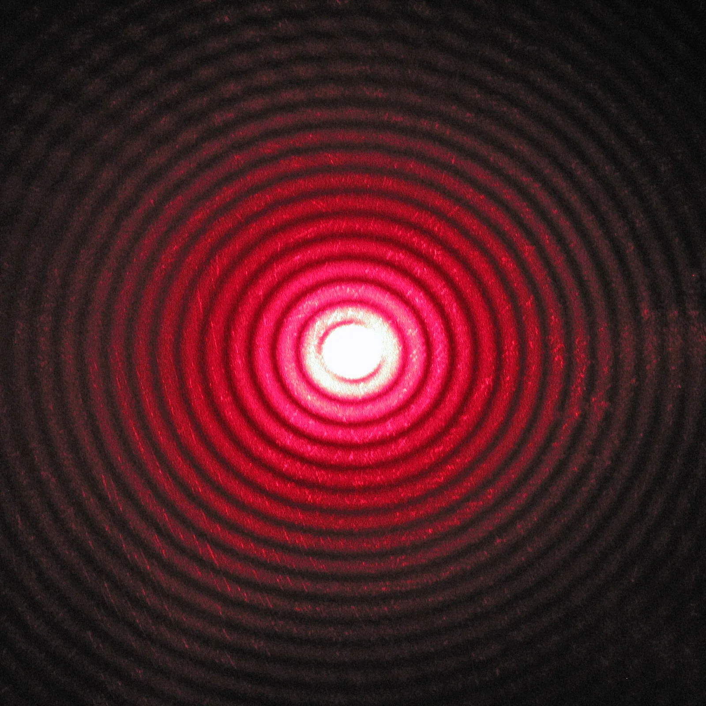
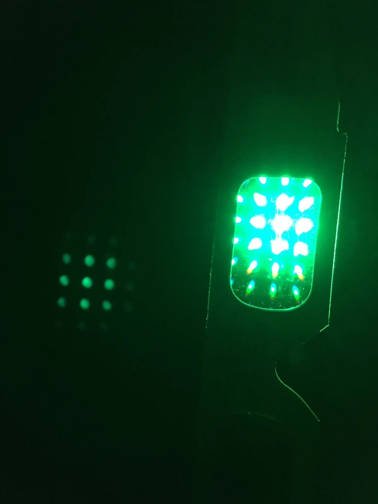

Valon interferenssi ja diffraktio
Miksi laserosoittimen säde piirtää seinälle kokonaisen rivin valopisteitä, kun se kulkee ohuen läpinäkyvän kalvon läpi?
Pohjatiedot
- Kaksi lähdettä värähtelee samassa vaiheessa. Niiden aallot vahvistavat toisiaan, kun matkaero on kokonainen määrä aallonpituuksialuku Aaltojen yhteisvaikutus: superpositio ja interferenssi
- Valo on sähkömagneettista aaltoliikettä. Näkyvän valon aallonpituus on $400$–$700\,\text{nm}$luku Sähkömagneettinen säteily ja mustan kappaleen spektri
- Prismassa violetti valo taittuu eniten, koska lasin taitekerroin on violetille valolle suurinluku Dispersio: prisma ja sateenkaari
Luvun tärkeät käsitteet Vapaaehtoinen
Tutustu luvun tärkeisiin käsitteisiin. Voit kirjoittaa niiden merkitykset sinulle vahvimmalla kielellä tai useammalla kielellä.
- Interferenssi
- Aaltojen yhteisvaikutus, kun ne kohtaavat. Saman taajuisten, samassa vaiheessa värähtelevien lähteiden aallot vahvistavat toisiaan, kun matkaero on kokonainen määrä aallonpituuksia.
- Diffraktio
- Valon leviäminen raon taakse myös suuntiin, jotka jäisivät varjoon. Kun rako on aallonpituuden suuruusluokkaa, kapeampi rako levittää valoa enemmän.
- Kaksoisrako
- Kaksi kapeaa, lähekkäistä rakoa, joihin tulee saman lähteen valo. Raot toimivat koherentteina lähteinä, ja varjostimelle syntyy tasavälisiä kirkkaita ja tummia juovia.
- Hila
- Levy tai kalvo, jossa on paljon tasavälisiä kapeita rakoja tai viivoja. Kun valo tulee kohtisuoraan hilaan, maksimien suunnat saadaan yhtälöstä $d\sin\theta = k\lambda$.
- Hilavakio
- Hilan vierekkäisten rakojen etäisyys $d$. Jos millimetrillä on $N$ viivaa, hilavakio on $d = 1\,\text{mm} : N$.
Pohdinta
Fysiikan tunnilla opettaja sammuttaa valot. Hän ohjaa punaisen laserosoittimen säteen diakehyksen läpi. Kehyksessä on ohut läpinäkyvä kalvo, joka näyttää tavalliselta muovilta. Seinälle ei tule yhtä valopistettä. Sinne tulee vaakasuora rivi punaisia pisteitä, ja pisteiden väli on sama.
Miten yksi suora valonsäde voi jakautua moneen suuntaan? Mikä päättää, missä pisteet ovat?
Valinnainen Kertaa: interferenssi
Ennusta
Tee ennusteet ennen tutkimista 2 kysymystä
Ennuste 1: tiheämpi hila
Ennuste 2: valon väri
Tutki
Simulaatio
Käyttöohje
Säädä kolmea asiaa: hilan viivatiheyttä $N$ eli viivojen määrää millimetrillä, laserin aallonpituutta $\lambda$ ja varjostimen etäisyyttä $L$ hilasta. Kuva on ylhäältä päin: laser on vasemmalla, hila sen edessä ja varjostin oikealla. Varjostimen asteikko näyttää etäisyyden $x$ keskimaksimista senttimetreinä. Kaari näyttää ensimmäisen kertaluvun kulman $\theta_1$ säteen suunnasta. Himmeä säde, joka ei osu varjostimeen, on maksimi, joka menee varjostimen reunan ohi. Lukemista näet hilavakion $d$, kahden ensimmäisen kertaluvun kulmat ja etäisyydet sekä maksimien määrän.
Mallin oletukset
Laserin säde tulee kohtisuoraan hilaan, ja varjostin on kohtisuorassa säteeseen nähden. Valo on yhtä aallonpituutta. Kuva on mittakaavassa: varjostin on $1{,}80\,\text{m}$ leveä. Malli laskee vain maksimien suunnat. Korkeampien kertalukujen pisteet on piirretty himmeämmiksi vain havainnollistukseksi. Se ei ole laskettu arvo. Mallissa ei näy rakojen leveyden vaikutusta. Lukemat ovat mallin laskemia arvoja, eivät mittauksia.
Laskennan selitys
Hilavakio lasketaan viivatiheydestä:
$$d = \frac{1\,\text{mm}}{N}$$
Kertaluvun $k$ maksimi on suunnassa, jossa $d\sin\theta = k\lambda$. Maksimi syntyy vain, kun $k\lambda < d$. Silloin maksimeja on $2k_\text{max} + 1$, missä $k_\text{max}$ on suurin kokonaisluku, joka täyttää tämän ehdon. Varjostimella maksimin etäisyys keskimaksimista on $x = L\tan\theta$.
Laserin säde kulkee hilan läpi varjostimelle. Muuta hilan viivatiheyttä, valon aallonpituutta ja varjostimen etäisyyttä. Katso, mihin valopisteet osuvat.
Koe 1: hilan viivatiheys
Testaa ennuste 1. Aallonpituus on $650\,\text{nm}$ ja varjostimen etäisyys $1{,}00\,\text{m}$. Muuta vain viivatiheyttä $N$. Kirjaa ainakin arvot $300$, $600$ ja $1000$. Seuraa kulmaa $\theta_1$ ja etäisyyttä $x_1$.
- Alkutila
- viivatiheys $N$ = $300\,\text{viivaa/mm}$, aallonpituus $\lambda$ = $650\,\text{nm}$, varjostimen etäisyys $L$ = $1{,}0\,\text{m}$
- Vakiona
- aallonpituus $\lambda$, varjostimen etäisyys $L$
- Muutetaan
- viivatiheys $N$
| viivatiheys $N$ | $\theta _1$ $(^\circ)$ | $x_1$ $(\text{cm})$ |
|---|
Laske rivin $N = 600$ lukemista vierekkäisten rakojen matkaero $\Delta s = d\sin\theta_1$. Hilavakio on $d = 1\,\text{mm} : 600$. Vastaa nanometreinä ja vertaa tulosta laserin aallonpituuteen.
Vihje 1: ohjaava kysymys
Hilavakio on $d = 1\,\text{mm} : 600$. Kuinka paljon se on nanometreinä?
Vihje 2: mikä yhteys
$1\,\text{mm} = 1\,000\,000\,\text{nm}$, joten
Vihje 3: välivaihe
Kerro hilavakio taulukon kulman sinillä: $1667\,\text{nm} \cdot \sin 22{,}95^\circ$.
Näytä ratkaisu
Annettu
viivatiheys $N = 600$ viivaa millimetrillä, simulaation lukema $\theta_1 = 22{,}95^\circ$, laserin aallonpituus $\lambda = 650\,\text{nm}$
Kysytty
vierekkäisten rakojen matkaero $\Delta s$ ensimmäisen kertaluvun maksimin suunnassa nanometreinä
Periaate
Valo tulee kohtisuoraan hilaan. Kulmassa $\theta$ lähtevien säteiden matkaero vierekkäisistä raoista on $d\sin\theta$. Ensimmäisen kertaluvun maksimissa aaltojen pitää saapua samassa vaiheessa. Siksi matkaeron pitää olla yksi aallonpituus.
Kaava
$d = \dfrac{1\,\text{mm}}{N}$ ja $\Delta s = d\sin\theta_1$
Muunnokset
$1\,\text{mm} = 1\,000\,000\,\text{nm}$, joten
Sijoitus
Vastaus
$650\,\text{nm}$
Kolme merkitsevää numeroa kuten aallonpituus. Matkaero on täsmälleen laserin aallonpituus.
Järkevyys
Muilla riveillä tulee sama: $3333\,\text{nm} \cdot \sin 11{,}24^\circ = 650\,\text{nm}$ ja $1000\,\text{nm} \cdot \sin 40{,}54^\circ = 650\,\text{nm}$. Tiheämmässä hilassa $d$ on pienempi. Siksi $\sin\theta_1$:n on oltava suurempi, jotta tulo pysyy aallonpituuden suuruisena.
Lisää tutkittavaa 4 tehtävää
Koe 2: aallonpituus
Testaa ennuste 2. Hilassa on $600$ viivaa millimetrillä, ja varjostimen etäisyys on $1{,}00\,\text{m}$. Muuta vain aallonpituutta $\lambda$. Kirjaa ainakin sininen $450\,\text{nm}$, vihreä $532\,\text{nm}$ ja punainen $650\,\text{nm}$.
- Alkutila
- viivatiheys $N$ = $600\,\text{viivaa/mm}$, aallonpituus $\lambda$ = $450\,\text{nm}$, varjostimen etäisyys $L$ = $1{,}0\,\text{m}$
- Vakiona
- viivatiheys $N$, varjostimen etäisyys $L$
- Muutetaan
- aallonpituus $\lambda$
| aallonpituus $\lambda$ | $\theta _1$ $(^\circ)$ | $x_1$ $(\text{cm})$ |
|---|
Laske hilayhtälöstä, missä kulmassa vihreän valon ($532\,\text{nm}$) ensimmäisen kertaluvun maksimi on, kun hilassa on $600$ viivaa millimetrillä. Vertaa tulosta simulaation lukemaan.
Vihje 1: ohjaava kysymys
Laske ensin hilavakio $d = 1\,\text{mm} : 600$ metreinä.
Vihje 2: mikä yhteys
Hilayhtälöstä saat $\sin\theta_1 = \lambda : d$, kun $k = 1$.
Vihje 3: välivaihe
Ota tuloksesta käänteinen sini.
Näytä ratkaisu
Annettu
viivatiheys $N = 600$ viivaa millimetrillä, aallonpituus $\lambda = 532\,\text{nm}$, kertaluku $k = 1$
Kysytty
ensimmäisen kertaluvun maksimin kulma $\theta_1$ keskimaksimin suunnasta asteina
Periaate
Valo tulee kohtisuoraan hilaan. Maksimi on suunnassa, jossa vierekkäisten rakojen matkaero $d\sin\theta$ on kokonainen määrä aallonpituuksia. Ensimmäisessä kertaluvussa matkaero on yksi aallonpituus.
Kaava
$d = \dfrac{1\,\text{mm}}{N}$ ja $d\sin\theta_1 = k\lambda$, josta
Muunnokset
$532\,\text{nm} = 532 \cdot 10^{-9}\,\text{m}$.
Sijoitus
Vastaus
$18{,}6^\circ$
Kolme merkitsevää numeroa kuten aallonpituus $532\,\text{nm}$. Tulos on sama kuin simulaation lukema $18{,}61^\circ$.
Järkevyys
Vihreän aallonpituus on sinisen $450\,\text{nm}$ ja punaisen $650\,\text{nm}$ välissä. Myös kulma on niiden välissä:
Tarkistus: $1{,}667\,\mu\text{m} \cdot \sin 18{,}61^\circ = 0{,}532\,\mu\text{m}$.
Valinnainen Lisäkoe: varjostimen etäisyys
Hilassa on $300$ viivaa millimetrillä, ja aallonpituus on $650\,\text{nm}$. Muuta vain varjostimen etäisyyttä $L$. Kirjaa ainakin arvot $0{,}50\,\text{m}$, $1{,}00\,\text{m}$ ja $2{,}00\,\text{m}$. Muuttuuko kulma $\theta_1$? Miten etäisyys $x_1$ muuttuu?
- Alkutila
- viivatiheys $N$ = $300\,\text{viivaa/mm}$, aallonpituus $\lambda$ = $650\,\text{nm}$, varjostimen etäisyys $L$ = $0{,}5\,\text{m}$
- Vakiona
- viivatiheys $N$, aallonpituus $\lambda$
- Muutetaan
- varjostimen etäisyys $L$
| varjostimen etäisyys $L$ | $\theta _1$ $(^\circ)$ | $x_1$ $(\text{cm})$ | $x_2$ $(\text{cm})$ |
|---|
Johtopäätös: mikä määrää maksimien suunnat
Kirjoita taulukoidesi perusteella: miten hilan viivatiheys ja valon aallonpituus vaikuttavat ensimmäisen kertaluvun maksimin kulmaan? Mikä suure pysyi kokeessa 1 samana, vaikka hila vaihtui?
Mallivastaus
Kokeessa 1 tiheämpi hila suurensi kulmaa. Hilalla, jossa on $300$ viivaa, oli $\theta_1 = 11{,}24^\circ$ ja $x_1 = 19{,}9\,\text{cm}$. Hilalla, jossa on $600$ viivaa, kulma oli $22{,}95^\circ$ ja etäisyys $42{,}4\,\text{cm}$. Hilalla, jossa on $1000$ viivaa, kulma oli $40{,}54^\circ$ ja etäisyys $85{,}5\,\text{cm}$. Tulo $d\sin\theta_1$ oli joka rivillä $650\,\text{nm}$ eli laserin aallonpituus. Maksimissa vierekkäisten rakojen matkaero on siis yksi aallonpituus. Kokeessa 2 pidempi aallonpituus suurensi kulmaa: sininen $450\,\text{nm}$ antoi $15{,}66^\circ$, vihreä $532\,\text{nm}$ antoi $18{,}61^\circ$ ja punainen $650\,\text{nm}$ antoi $22{,}95^\circ$. Hilassa punainen valo poikkeaa siis eniten, toisin kuin prismassa. Tulokset sopivat ehtoon $d\sin\theta = k\lambda$. Arvot ovat mallin laskemia.
Arvioi oma vastauksesi
Merkitse kohdat, jotka sinun vastauksessasi jo on.
Kertaa asia teoriasta ja harjoittele tehtävillä.
Mittaus: vihreän laserin aallonpituus
Opiskelijat mittasivat vihreän laserosoittimen aallonpituuden hilalla. He asettivat laserin, hilan ja varjostimen riviin. Säde osui kohtisuoraan sekä hilaan että varjostimeen. Mittanauhalla mitattiin hilan etäisyys varjostimesta ja symmetristen maksimien välit. Valopisteen keskikohdan arvioiminen oli epävarminta. Siksi välin mittausepävarmuudeksi arvioitiin $0{,}3\,\text{cm}$. Silloin keskimaksimista mitatun etäisyyden $x$ epävarmuus on puolet siitä, eli $\Delta x = 0{,}15\,\text{cm}$.
| suure | arvo | mittausepävarmuus |
|---|---|---|
| hilan viivatiheys $N$ | $300$ viivaa millimetrillä | (valmistajan arvo) |
| hilan etäisyys varjostimesta $L$ | $1{,}500\,\text{m}$ | $\Delta L = 0{,}005\,\text{m}$ |
| maksimien $+1$ ja $-1$ väli | $48{,}4\,\text{cm}$ | $0{,}3\,\text{cm}$ |
| maksimien $+2$ ja $-2$ väli | $101{,}2\,\text{cm}$ | $0{,}3\,\text{cm}$ |
Esimerkkiaineisto.
Laske laserin aallonpituus toisen kertaluvun maksimeista. Vastaa nanometreinä. Arvioi lopuksi, kuinka suuri tuloksen epävarmuus on.
Vihje 1: ohjaava kysymys
Maksimien $+2$ ja $-2$ väli on kaksi kertaa toisen kertaluvun maksimin etäisyys $x_2$ keskimaksimista.
Vihje 2: mikä yhteys
Laske ensin kulma yhtälöstä $\tan\theta_2 = x_2 : L$. Laske sitten aallonpituus hilayhtälöstä, jossa $k = 2$.
Vihje 3: välivaihe
$d = 1 \cdot 10^{-3}\,\text{m} : 300$.
Näytä ratkaisu
Annettu
viivatiheys $N = 300$ viivaa millimetrillä, hilan etäisyys varjostimesta $L = 1{,}500\,\text{m}$ ($\Delta L = 0{,}005\,\text{m}$), maksimien $\pm 2$ väli $101{,}2\,\text{cm}$, kertaluku $k = 2$, $\Delta x = 0{,}15\,\text{cm}$
Kysytty
laserin valon aallonpituus $\lambda$ nanometreinä ja sen epävarmuus
Periaate
Säde tulee kohtisuoraan hilaan, joten maksimit noudattavat hilayhtälöä. Varjostin on kohtisuorassa säteeseen nähden. Siksi kulma saadaan suorakulmaisesta kolmiosta, jonka kateetit ovat $x_2$ ja $L$. Kauempi maksimi antaa pienemmän suhteellisen epävarmuuden, koska sen $x$ on suurempi.
Kaava
$\tan\theta_2 = \dfrac{x_2}{L}$ ja $d\sin\theta_2 = k\lambda$, josta $\lambda = \dfrac{d\sin\theta_2}{k}$, missä $d = \dfrac{1\,\text{mm}}{N}$
Muunnokset
Sijoitus
joten
Epävarmuus: suurin arvo saadaan, kun $x_2 = 50{,}75\,\text{cm}$ ja $L = 1{,}495\,\text{m}$. Silloin tulos on $536\,\text{nm}$. Pienin arvo saadaan, kun $x_2 = 50{,}45\,\text{cm}$ ja $L = 1{,}505\,\text{m}$. Silloin tulos on $530\,\text{nm}$.
Vastaus
$533\,\text{nm}$
Epävarmuus noin $3\,\text{nm}$. Vastauksessa on kolme merkitsevää numeroa, koska epävarmuus on muutaman nanometrin luokkaa.
Järkevyys
Vihreän laserosoittimen ilmoitettu aallonpituus $532\,\text{nm}$ on välillä $530$–$536\,\text{nm}$. Ensimmäisen kertaluvun maksimeista ($x_1 = 24{,}2\,\text{cm}$) saadaan samalla tavalla $531\,\text{nm}$ ja väli $526$–$536\,\text{nm}$ eli epävarmuus noin $5\,\text{nm}$. Kauempi maksimi todella antaa tarkemman tuloksen.
Teoria
Ydinajatus
Valo aaltona
Luvussa Aaltojen yhteisvaikutus: superpositio ja interferenssi nähtiin, että kahden lähteen aallot muodostavat pysyvän interferenssikuvion. Lähteiden taajuus on sama, ja ne värähtelevät samassa vaiheessa. Matkaero $\Delta s$ tarkoittaa sitä, kuinka paljon pidemmän matkan toinen aalto on kulkenut kuin toinen. Kohdissa, joissa matkaero on kokonainen määrä aallonpituuksia, aallot vahvistavat toisiaan. Kohdissa, joissa matkaero on puoli aallonpituutta yli kokonaisen määrän, aallot heikentävät toisiaan. Valo on sähkömagneettista aaltoliikettä (luku Sähkömagneettinen säteily ja mustan kappaleen spektri). Siksi myös valon pitäisi interferoida. Näkyvän valon aallonpituus on kuitenkin hyvin pieni, noin $400$–$700\,\text{nm}$. Jotta valon interferenssi näkyisi selvästi, rakovälien ja mittausjärjestelyn pitää olla sopivia. Juovien etäisyys ei riipu vain aallonpituudesta. Se riippuu myös rakojen ja varjostimen sijainnista. Sopivassa kokeessa kirkkaat ja tummat juovat voivat olla toisistaan millimetrien tai senttimetrien päässä.

Koherentti valo
Pysyvä kuvio syntyy vain, kun lähteet ovat koherentteja. Silloin niillä on sama taajuus, ja niiden vaihe-ero pysyy samana. Kaksi tavallista lamppua ei tuota kuviota. Lampun valoa lähettävät lukemattomat atomit toisistaan riippumatta. Siksi kahden lampun valon vaihe-ero vaihtelee satunnaisesti ja hyvin nopeasti. Vahvistavan ja heikentävän interferenssin kohdat vaihtavat silloin paikkaa jatkuvasti, ja silmä näkee vain tasaisen valaistuksen. Laserin valo on koherenttia. Koherentit lähteet saadaan myös jakamalla yhden lähteen valo kahteen osaan, esimerkiksi kahdella raolla.
Diffraktio raossa
Kun valo kulkee kapean raon läpi, se ei jatka terävänä kimppuna. Se leviää raon taakse myös suuntiin, jotka jäisivät varjoon. Tätä sanotaan diffraktioksi. Se on tuttua vesiaalloista (luku Aalto kohtaa esteen tai raon). Diffraktio on voimakasta, kun raon leveys on aallonpituuden suuruusluokkaa. Mitä kapeampi rako on, sitä laajemmalle valo leviää. Kun rakoa kavennetaan, varjostimelle syntyvä kirkas keskialue levenee eikä kapene. Varjostin on levy tai seinä, jolle valokuvio tulee. Ikkunasta tuleva valo ei näytä taipuvan, koska ikkuna on miljoonia kertoja aallonpituutta leveämpi.
Youngin kaksoiskoe
Thomas Young teki 1800-luvun alussa kokeen, joka osoitti valon aaltoliikkeeksi. Hän ohjasi saman valon kahteen kapeaan, lähekkäiseen rakoon. Diffraktion vuoksi valo leviää kummastakin raosta laajalle, ja rakojen aallot menevät päällekkäin. Molempien rakojen valo tulee samasta aaltorintamasta. Siksi raot toimivat koherentteina lähteinä. Varjostimelle syntyy tasavälisiä kirkkaita ja tummia juovia. Keskellä on kirkas juova, koska sinne on kummastakin raosta yhtä pitkä matka. Seuraavassa kirkkaassa juovassa matkaero on yksi aallonpituus. Tummat juovat ovat interferenssin tunnusmerkki. Niihin tulee kahdesta raosta yhdessä vähemmän valoa kuin kummastakin raosta yksinään.
Hila
Hila on levy tai kalvo, jossa on suuri määrä tasavälisiä kapeita rakoja tai viivoja. Vierekkäisten rakojen etäisyys on hilavakio $d$. Koulun hiloissa on tavallisesti $100$, $300$ tai $600$ viivaa millimetrillä.
Hilan kirkkaita kohtia sanotaan maksimeiksi. Ne syntyvät samoihin suuntiin kuin kaksoisraon kirkkaat juovat, kun rakojen väli on sama. Näissä suunnissa vierekkäisten rakojen matkaero on kokonainen määrä aallonpituuksia. Silloin jokaisen raon aalto saapuu samassa vaiheessa. Jo vähän sivummalla eri rakojen aallot ovat eri vaiheissa ja kumoavat toisensa lähes kokonaan. Siksi hilan maksimit ovat kapeita ja kirkkaita, ja niiden välissä on lähes pimeää. Laserin valo piirtää varjostimelle teräviä pisteitä, joiden paikat voi mitata tarkasti.
Valkoinen valo hilassa
Mitä pidempi aallonpituus on, sitä suuremman matkaeron maksimi vaatii. Siksi sen poikkeamakulmakin on suurempi. Valkoisen valon kaikki värit menevät keskimaksimiin samaan suuntaan, joten keskimaksimi on valkoinen. Sen molemmin puolin valo hajoaa spektriksi eli väreiksi: violetti poikkeaa vähiten ja punainen eniten. Prismassa järjestys on päinvastainen, koska violetin valon taitekerroin on suurin (luku Dispersio: prisma ja sateenkaari). Kauempana keskimaksimista eri kertalukujen spektrit menevät osittain päällekkäin. Spektrometreissä valon aallonpituudet mitataan hilan avulla.

CD-levy heijastushilana
CD-levyn tietoraita kiertää levyn pinnalla tiheänä spiraalina. Raidan vierekkäisten kierrosten etäisyys on $1{,}6\,\mu\text{m}$ (standardi IEC 60908, 1999). DVD-levyllä etäisyys on $0{,}74\,\mu\text{m}$ (standardi ECMA-267, 2001). Levyn pinnasta heijastuva valo käyttäytyy samoin kuin hilan läpi kulkeva valo. Tasavälisistä raidoista heijastuneet aallot interferoivat, ja kukin aallonpituus vahvistuu omassa suunnassaan. Siksi levyn pinnalla näkyy sateenkaaren värejä, jotka vaihtuvat katselukulman mukaan. Tällaista hilaa sanotaan heijastushilaksi.
Hilayhtälö
Kun valo tulee kohtisuoraan hilaan, vierekkäisistä raoista kulmassa $\theta$ lähtevien säteiden matkaero saadaan kuvan suorakulmaisesta kolmiosta: $\Delta s = d\sin\theta$. Kulma $\theta$ mitataan tulevan valon suunnasta eli keskimaksimin suunnasta. Maksimi syntyy, kun matkaero on kokonainen määrä aallonpituuksia. Silloin pätee hilayhtälö:
$$d \sin\theta = k\lambda$$
Kaavassa $d$ on hilavakio ($\text{m}$), $\theta$ on maksimin suunta tulevan valon suuntaan nähden, $k = 0, 1, 2, \ldots$ on maksimin kertaluku eli järjestysnumero keskimaksimista lukien, ja $\lambda$ on valon aallonpituus ($\text{m}$). Kertaluku $k = 0$ on keskimaksimi. Sen kummallakin puolella on samanlaiset maksimit. Siksi toisen puolen kertaluvut merkitään usein negatiivisina.
Hilavakio viivatiheydestä
Hilan valmistaja ilmoittaa yleensä, kuinka monta viivaa hilassa on millimetrin matkalla. Jos millimetrillä on $N$ viivaa, vierekkäisten viivojen etäisyys on
$$d = \frac{1\,\text{mm}}{N}$$
Esimerkiksi kun millimetrillä on $300$ viivaa, $d = 1\,\text{mm} : 300 = 1 \cdot 10^{-3}\,\text{m} : 300 = 3{,}33 \cdot 10^{-6}\,\text{m}$ eli $3{,}33\,\mu\text{m}$. Mitä tiheämpi hila on, sitä pienempi on $d$. Silloin saman kertaluvun maksimi on suuremmassa kulmassa.
Kuinka monta maksimia syntyy
Sinin arvo on enintään $1$, joten kertaluvun on täytettävä ehto $k\lambda < d$. Jos olisi $k\lambda = d$, valo kulkisi hilan pinnan suuntaisesti eikä osuisi varjostimelle. Esimerkiksi kun hilassa on $600$ viivaa millimetrillä ja valon aallonpituus on $650\,\text{nm}$, $d : \lambda = 1{,}667\,\mu\text{m} : 0{,}650\,\mu\text{m} = 2{,}56$. Maksimeja syntyy kertaluvuilla $k = 0, \pm 1, \pm 2$ eli viisi kappaletta.
Kulma varjostimelta
Kulmaa ei yleensä mitata suoraan. Sen sijaan varjostimelta mitataan etäisyyksiä. Varjostin on kohtisuorassa laserin sädettä vastaan etäisyydellä $L$ hilasta. Maksimi on etäisyydellä $x$ keskimaksimista. Kuvan suorakulmaisesta kolmiosta saadaan
$$\tan\theta = \frac{x}{L}$$
Sini ja tangentti ovat lähes yhtä suuret vain pienillä kulmilla. Siksi ensin lasketaan kulma tangentista ja vasta sitten kulman sini. Esimerkiksi kun hilassa on $600$ viivaa millimetrillä ja vihreän laserin aallonpituus on $532\,\text{nm}$, kulma on $\theta_1 = 18{,}6^\circ$. Metrin päässä olevalla varjostimella etäisyys on silloin $x_1 = 33{,}7\,\text{cm}$.
Laserin aallonpituuden mittaaminen
Hilalla voi mitata laserin aallonpituuden koulun laboratoriossa. Laser, hila ja varjostin asetetaan riviin. Säteen pitää osua kohtisuoraan sekä hilaan että varjostimeen. Mittanauhalla mitataan kaksi asiaa. Ensimmäinen on hilan etäisyys varjostimesta $L$. Toinen on kahden symmetrisen maksimin $+k$ ja $-k$ välinen etäisyys. Sen puolikas on $x$. Kahden pisteen välin mittaaminen on tarkempaa kuin keskimaksimin paikan arvioiminen. Koulun kokeissa käytetään pienitehoista laseria, joka sopii opetukseen. Laseria käytetään opettajan ohjeiden mukaan. Laserin sädettä tai hilasta tai levystä heijastuvaa sädettä ei saa suunnata kenenkään silmiin, eikä säteeseen saa katsoa. Ennen mittausta tarkistetaan, mihin heijastuneet säteet menevät ja että ympäristö on turvallinen.
Suurin epävarmuus syntyy yleensä siitä, mihin valopisteen keskikohta arvioidaan. Oletetaan, että $x$ voidaan mitata epävarmuudella $\Delta x = 0{,}2\,\text{cm}$. Silloin kauempana olevasta maksimista saadaan pienempi suhteellinen epävarmuus, koska sen $x$ on suurempi. Tulosta verrataan valmistajan ilmoittamaan arvoon. Punaisen laserosoittimen aallonpituus on yleensä noin $650\,\text{nm}$ ja vihreän $532\,\text{nm}$.
Yleinen virhekäsitys
Moni olettaa, että hila taivuttaa sinistä ja violettia valoa eniten, kuten prisma. Hilassa on päinvastoin. Maksimin suunnan määrää ehto $d\sin\theta = k\lambda$, joten pisin aallonpituus eli punainen valo poikkeaa eniten. Prismassa violetti taittuu eniten, koska lasin taitekerroin on violetille valolle suurin.
Toinen virhe on luulla, että kapeampi rako tekee valokimpusta kapeamman. Kun rako on aallonpituuden suuruusluokkaa, diffraktio levittää valoa sitä enemmän, mitä kapeampi rako on.
Tiivistelmä
- Valo on aaltoliikettä. Koherenttien lähteiden valo interferoi, ja varjostimelle syntyy kirkkaita ja tummia kohtia.
- Diffraktiossa valo leviää kapean raon taakse. Mitä kapeampi rako on, sitä laajemmalle valo leviää.
- Hilan maksimit ovat suunnissa, joille $d\sin\theta = k\lambda$, ja hilavakio on $d = 1\,\text{mm} : N$.
- Varjostimelta mitatuista etäisyyksistä saadaan $\tan\theta = x : L$. Näin hilalla mitataan laserin aallonpituus.
- Valkoinen valo hajoaa hilassa spektriksi, jossa punainen valo poikkeaa eniten. CD-levy on heijastushila.
Valinnainen Palaa ennusteisiisi
Vertaa ennusteitasi teoriaan ja kokeiden mallin arvoihin. Palaa sitten alun kysymykseen: miksi läpinäkyvän kalvon läpi kulkenut laserin säde piirsi seinälle rivin pisteitä? Mikä määräsi pisteiden välit?
Haluaisitko muuttaa ennustettasi?
Esimerkit
Esimerkki 1: Laser ja hila
Punaisen laserosoittimen säde osuu kohtisuoraan hilaan, jossa on $300$ viivaa millimetrillä. Varjostin on $2{,}00\,\text{m}$ päässä hilasta. Sillä ensimmäisen kertaluvun maksimit $k = 1$ ja $k = -1$ ovat $79{,}2\,\text{cm}$ päässä toisistaan. Kuinka suuri on laserin valon aallonpituus?
Vaihe 1/7
Tunnetut ja kysytty. Viivatiheys on $N = 300$ viivaa millimetrillä, varjostimen etäisyys on $L = 2{,}00\,\text{m}$ ja maksimien $\pm 1$ välinen etäisyys on $79{,}2\,\text{cm}$. Siksi ensimmäinen maksimi on etäisyydellä $x = 39{,}6\,\text{cm}$ keskimaksimista. Kertaluku on $k = 1$. Kysytään aallonpituutta $\lambda$.
Vaihe 2/7
Periaate. Maksimien suunnat noudattavat hilayhtälöä $d\sin\theta = k\lambda$, koska säde tulee kohtisuoraan hilaan. Varjostin on kohtisuorassa säteeseen nähden. Siksi kulma saadaan suorakulmaisesta kolmiosta, jonka kateetit ovat $x$ ja $L$. Hilavakio saadaan viivatiheydestä.
Vaihe 3/7
Kaava ratkaistuna. $$\begin{aligned} \tan\theta &= \frac{x}{L} \\[6pt] d\sin\theta &= k\lambda \\[6pt] \lambda &= \frac{d\sin\theta}{k} \end{aligned}$$
Vaihe 4/7
Yksikkömuunnokset. Hilavakio on
ja maksimin etäisyys on
Vaihe 5/7
Sijoitus. $$\begin{aligned} \tan\theta &= \frac{x}{L} \\ &= \frac{0{,}396\,\text{m}}{2{,}00\,\text{m}} = 0{,}198 \\ \theta &= 11{,}20^\circ \\[6pt] \lambda &= \frac{d\sin\theta}{k} \\ &= \frac{3{,}333 \cdot 10^{-6}\,\text{m} \cdot \sin 11{,}20^\circ}{1} \\ &= 6{,}474 \cdot 10^{-7}\,\text{m} \end{aligned}$$
Vaihe 6/7
Tulos. Aallonpituus on
Vastauksessa on kolme merkitsevää numeroa, kuten etäisyyksissä $2{,}00\,\text{m}$ ja $79{,}2\,\text{cm}$.
Vaihe 7/7
Järkevyys. Punaisen valon aallonpituus on noin $620$–$750\,\text{nm}$, ja punaisen laserosoittimen ilmoitettu aallonpituus on yleensä noin $650\,\text{nm}$. Tulos on siis uskottava. Kulma on pieni, joten $\sin\theta$ on lähes sama kuin $\tan\theta = 0{,}198$. Jos aallonpituus laskettaisiin tangentilla, tulos olisi $660\,\text{nm}$. Se olisi vähän liian suuri, kuten pitääkin, sillä tangentti on aina siniä suurempi.
Valinnainen Esimerkki 2: Etsi virhe
Esimerkki 3: Sovella uuteen tilanteeseen: DVD-levy heijastushilana
DVD-levyn tietoraidan vierekkäisten kierrosten etäisyys on $0{,}74\,\mu\text{m}$ (standardi ECMA-267, 2001). Punaisen laserin säteen aallonpituus on $650\,\text{nm}$. Säde osuu kohtisuoraan levyn pintaan. Oletetaan, että levy toimii heijastushilana, jonka hilavakio on raitojen etäisyys.
Missä kulmassa tulevaan säteeseen nähden ensimmäisen kertaluvun maksimi heijastuu?
Vihje 1: ohjaava kysymys
Heijastushilassa maksimien suunnat noudattavat samaa hilayhtälöä kuin läpäisyhilassa. Mikä on hilavakio?
Vihje 2: mikä yhteys
Hilavakio on $d = 0{,}74\,\mu\text{m}$, ja ensimmäisessä kertaluvussa $\sin\theta = \lambda : d$.
Vihje 3: välivaihe
Ota tuloksesta käänteinen sini.
Näytä ratkaisu
Annettu
raitojen etäisyys $d = 0{,}74\,\mu\text{m}$ (ECMA-267, 2001), aallonpituus $\lambda = 650\,\text{nm}$, kertaluku $k = 1$, valo tulee kohtisuoraan levyyn
Kysytty
ensimmäisen kertaluvun maksimin kulma $\theta$ tulevaan säteeseen nähden asteina
Periaate
Tasavälisistä raidoista heijastuneet aallot interferoivat samoin kuin hilan raoista tulleet aallot. Valo tulee kohtisuoraan. Silloin vierekkäisistä raidoista kulmassa $\theta$ heijastuneiden aaltojen matkaero on $d\sin\theta$. Maksimi syntyy, kun matkaero on kokonainen määrä aallonpituuksia.
Kaava
$d\sin\theta = k\lambda$, josta $\theta = \sin^{-1}\dfrac{k\lambda}{d}$
Muunnokset
$650\,\text{nm} = 650 \cdot 10^{-9}\,\text{m}$ ja $0{,}74\,\mu\text{m} = 0{,}74 \cdot 10^{-6}\,\text{m}$.
Sijoitus
Vastaus
$61^\circ$
Kaksi merkitsevää numeroa kuten raitaväli $0{,}74\,\mu\text{m}$.
Järkevyys
Aallonpituus on lähes raitavälin suuruinen, joten kulman on oltava suuri. CD-levyllä ($1{,}6\,\mu\text{m}$) sama maksimi olisi vain kulmassa $24^\circ$. Toista kertalukua DVD-levyltä ei synny, koska
Kertaa luvun käsitteet
Jos valitset Kertaa myöhemmin, kortti menee kertauspakkaasi.
- Hila
- Optinen komponentti, jonka rakojen kautta valo taipuu ja hajoaa spektriksi.
Tehtävät
Taso 1 · perusharjoitus 8 tehtävää
Yksi kaava tai yksi päättelyaskel. Tee ensin ydintehtävät. Loput ovat lisäharjoitusta.
- Tehtävä 13-1
Hilassa on $300$ viivaa millimetrillä. Kuinka suuri on hilavakio? Anna vastaus mikrometreinä.
Vastaus
$3{,}33\,\mu\text{m}$
Näytä ratkaisu
Annettu
viivatiheys $N = 300$ viivaa millimetrillä
Kysytty
hilavakio $d$ mikrometreinä
Periaate
Hilavakio on vierekkäisten viivojen etäisyys. Kun millimetrin matkalla on $N$ tasavälistä viivaa, viivojen väli on millimetri jaettuna viivojen määrällä.
Kaava
$d = \dfrac{1\,\text{mm}}{N}$
Muunnokset
$1\,\text{mm} = 1 \cdot 10^{-3}\,\text{m}$ ja lopuksi $1\,\mu\text{m} = 1 \cdot 10^{-6}\,\text{m}$.
Sijoitus
$d$$= \dfrac{1 \cdot 10^{-3}\,\text{m}}{300}$$= 3{,}333 \cdot 10^{-6}\,\text{m}$$= 3{,}333\,\mu\text{m}$Vastaus
$3{,}33\,\mu\text{m}$
Kolme merkitsevää numeroa kuten viivatiheys $300$.
Järkevyys
Hilavakio on muutaman näkyvän valon aallonpituuden suuruinen ($3{,}33\,\mu\text{m} = 3330\,\text{nm}$). Siksi diffraktio ja interferenssi näkyvät selvästi. Tarkistus:
$300 \cdot 3{,}333\,\mu\text{m}$$= 1000\,\mu\text{m}$$= 1\,\text{mm}$ - Tehtävä 13-2Ydintehtävä
Punaisen laserin valon aallonpituus on $650\,\text{nm}$. Valo osuu kohtisuoraan hilaan, jonka hilavakio on $2{,}00\,\mu\text{m}$. Missä kulmassa keskimaksimin suunnasta ensimmäisen kertaluvun maksimi on?
Vastaus
$19{,}0^\circ$
Näytä ratkaisu
Annettu
aallonpituus $\lambda = 650\,\text{nm}$, hilavakio $d = 2{,}00\,\mu\text{m}$, kertaluku $k = 1$
Kysytty
ensimmäisen kertaluvun maksimin kulma $\theta$ asteina
Periaate
Valo tulee kohtisuoraan hilaan, joten maksimien suunnat noudattavat hilayhtälöä: maksimi syntyy suuntaan, jossa vierekkäisten rakojen matkaero $d\sin\theta$ on kokonainen määrä aallonpituuksia.
Kaava
$d\sin\theta = k\lambda$, josta $\theta = \sin^{-1}\dfrac{k\lambda}{d}$
Muunnokset
$650\,\text{nm} = 650 \cdot 10^{-9}\,\text{m}$ ja $2{,}00\,\mu\text{m} = 2{,}00 \cdot 10^{-6}\,\text{m}$.
Sijoitus
$\theta$$= \sin^{-1}\dfrac{1 \cdot 650 \cdot 10^{-9}\,\text{m}}{2{,}00 \cdot 10^{-6}\,\text{m}}$$= \sin^{-1} 0{,}325$$= 18{,}97^\circ$Vastaus
$19{,}0^\circ$
Kolme merkitsevää numeroa kuten hilavakio $2{,}00\,\mu\text{m}$.
Järkevyys
Aallonpituus on noin kolmasosa hilavakiosta, joten $\sin\theta$ on noin $0{,}33$ ja kulma noin $19^\circ$, selvästi alle $90^\circ$. Tarkistus: $2{,}00\,\mu\text{m} \cdot \sin 18{,}97^\circ = 0{,}650\,\mu\text{m}$.
- Tehtävä 13-3
Valo osuu kohtisuoraan hilaan, jonka hilavakio on $2{,}50\,\mu\text{m}$. Toisen kertaluvun maksimi on kulmassa $30{,}0^\circ$ keskimaksimin suunnasta. Kuinka suuri on valon aallonpituus? Anna vastaus nanometreinä.
Vastaus
$625\,\text{nm}$
Näytä ratkaisu
Annettu
hilavakio $d = 2{,}50\,\mu\text{m}$, kertaluku $k = 2$, maksimin kulma $\theta = 30{,}0^\circ$
Kysytty
valon aallonpituus $\lambda$ nanometreinä
Periaate
Valo tulee kohtisuoraan hilaan, joten maksimin suunta noudattaa hilayhtälöä. Toisen kertaluvun maksimissa vierekkäisten rakojen matkaero on kaksi aallonpituutta.
Kaava
$d\sin\theta = k\lambda$, josta $\lambda = \dfrac{d\sin\theta}{k}$
Muunnokset
$2{,}50\,\mu\text{m} = 2{,}50 \cdot 10^{-6}\,\text{m}$ ja lopuksi $1\,\text{nm} = 1 \cdot 10^{-9}\,\text{m}$.
Sijoitus
$\lambda$$= \dfrac{2{,}50 \cdot 10^{-6}\,\text{m} \cdot \sin 30{,}0^\circ}{2}$$= \dfrac{2{,}50 \cdot 10^{-6}\,\text{m} \cdot 0{,}500}{2}$$= 6{,}25 \cdot 10^{-7}\,\text{m}$$= 625\,\text{nm}$Vastaus
$625\,\text{nm}$
Kolme merkitsevää numeroa kuten hilavakio ja kulma.
Järkevyys
Aallonpituus on näkyvän valon alueella $400$–$700\,\text{nm}$; $625\,\text{nm}$ on oranssinpunaista valoa. Jos kertaluku olisi unohdettu, tulos olisi $1250\,\text{nm}$. Se on infrapunaa, joten jakaminen kahdella on tarpeen. Tarkistus:
$2 \cdot 625\,\text{nm}$$= 1250\,\text{nm}$$= 2500\,\text{nm} \cdot 0{,}500$ - Tehtävä 13-4
Varjostin on $1{,}20\,\text{m}$ päässä hilasta. Se on kohtisuorassa laserin sädettä vastaan. Ensimmäisen kertaluvun maksimi on varjostimella $30{,}0\,\text{cm}$ päässä keskimaksimista. Missä kulmassa keskimaksimin suunnasta maksimi on?
Vastaus
$14{,}0^\circ$
Näytä ratkaisu
Annettu
varjostimen etäisyys hilasta $L = 1{,}20\,\text{m}$, ensimmäisen maksimin etäisyys keskimaksimista $x = 30{,}0\,\text{cm}$
Kysytty
maksimin kulma $\theta$ keskimaksimin suunnasta asteina
Periaate
Varjostin on kohtisuorassa laserin sädettä vastaan, joten hila, keskimaksimi ja maksimi muodostavat suorakulmaisen kolmion, jonka kateetit ovat $L$ ja $x$. Kulman tangentti on vastaisen ja viereisen kateetin suhde.
Kaava
$\tan\theta = \dfrac{x}{L}$, josta $\theta = \tan^{-1}\dfrac{x}{L}$
Muunnokset
$x$$= 30{,}0\,\text{cm}$$= 30{,}0 \cdot 0{,}01\,\text{m}$$= 0{,}300\,\text{m}$Sijoitus
$\theta$$= \tan^{-1}\dfrac{0{,}300\,\text{m}}{1{,}20\,\text{m}}$$= \tan^{-1} 0{,}250$$= 14{,}04^\circ$Vastaus
$14{,}0^\circ$
Kolme merkitsevää numeroa kuten etäisyydet $1{,}20\,\text{m}$ ja $30{,}0\,\text{cm}$.
Järkevyys
Maksimi on sivussa neljäsosan varjostimen etäisyydestä. Siksi kulman pitää olla selvästi pienempi kuin kulma, jolla $x$ olisi yhtä suuri kuin $L$. Se kulma on $45^\circ$. Tarkistus: $1{,}20\,\text{m} \cdot \tan 14{,}04^\circ = 0{,}300\,\text{m}$.
- Tehtävä 13-5
Helium-neonlaserin valon aallonpituus on $633\,\text{nm}$. Valo osuu kohtisuoraan hilaan. Ensimmäisen kertaluvun maksimi on kulmassa $22{,}0^\circ$ keskimaksimin suunnasta. Kuinka suuri on hilavakio? Anna vastaus mikrometreinä.
Vastaus
$1{,}69\,\mu\text{m}$
Näytä ratkaisu
Annettu
aallonpituus $\lambda = 633\,\text{nm}$, kertaluku $k = 1$, maksimin kulma $\theta = 22{,}0^\circ$
Kysytty
hilavakio $d$ mikrometreinä
Periaate
Valo tulee kohtisuoraan hilaan, joten maksimin suunta noudattaa hilayhtälöä. Ensimmäisen kertaluvun maksimissa vierekkäisten rakojen matkaero on yksi aallonpituus.
Kaava
$d\sin\theta = k\lambda$, josta $d = \dfrac{k\lambda}{\sin\theta}$
Muunnokset
$633\,\text{nm} = 633 \cdot 10^{-9}\,\text{m}$ ja lopuksi $1\,\mu\text{m} = 1 \cdot 10^{-6}\,\text{m}$.
Sijoitus
$d$$= \dfrac{1 \cdot 633 \cdot 10^{-9}\,\text{m}}{\sin 22{,}0^\circ}$$= \dfrac{633 \cdot 10^{-9}\,\text{m}}{0{,}3746}$$= 1{,}690 \cdot 10^{-6}\,\text{m}$$= 1{,}690\,\mu\text{m}$Vastaus
$1{,}69\,\mu\text{m}$
Kolme merkitsevää numeroa kuten aallonpituus ja kulma.
Järkevyys
Hilavakion on oltava suurempi kuin aallonpituus, jotta ensimmäinen maksimi syntyy. Tässä $1{,}69\,\mu\text{m}$ on noin $2{,}7$ kertaa $0{,}633\,\mu\text{m}$. Se vastaa noin $590$ viivaa millimetrillä, mikä on tavallinen koulun hila.
- Tehtävä 13-6Ydintehtävä
Laserin valo kulkee kapean raon läpi. Varjostimelle syntyy diffraktiokuvio. Mitä kuvion leveydelle tapahtuu, kun rakoa kavennetaan?
Vastaus
Kuvio levenee, koska kapeassa raossa valo taipuu enemmän sivuille.
Näytä ratkaisu
Kysytty
miten diffraktiokuvion leveys muuttuu, kun rakoa kavennetaan
Periaate
Diffraktio tarkoittaa, että valo taipuu raon reunoilla. Diffraktio on sitä voimakkaampaa, mitä lähempänä raon leveys on aallonpituutta. Kapeassa raossa valo taipuu laajemmalle kulma-alueelle. Aallonpituus tulee valonlähteestä, eikä se muutu raossa.
Mallivastaus
Kuvio levenee, koska kapeassa raossa valo taipuu enemmän sivuille. Vaihtoehto, jonka mukaan kuvio kapenee, ei ole totta. Kapeakaan rako ei päästä läpi vain suoraan etenevää valoa. Vaihtoehto, jonka mukaan kuvion leveys riippuu vain aallonpituudesta, unohtaa raon leveyden. Juuri raon leveys ratkaisee, kuinka paljon valo taipuu. Vaihtoehto, jonka mukaan rako lyhentää aallonpituutta ja siirtää maksimeja ulommas, on väärä. Rako ei muuta aallonpituutta. Kuvio levenee siksi, että valo taipuu enemmän. Se ei levene siksi, että aallonpituus muuttuisi.
- Tehtävä 13-7
Opiskelija vaihtaa hilan tiheämpään. Uudessa hilassa on $500$ viivaa millimetrillä. Vihreän laserin valon aallonpituus on $532\,\text{nm}$. Valo osuu kohtisuoraan hilaan.
Missä kulmassa keskimaksimin suunnasta toisen kertaluvun maksimi on uudella hilalla?
Vastaus
$32{,}1^\circ$
Näytä ratkaisu
Annettu
viivatiheys $N = 500$ viivaa millimetrillä, aallonpituus $\lambda = 532\,\text{nm}$, kertaluku $k = 2$
Kysytty
toisen kertaluvun maksimin kulma $\theta$ asteina
Periaate
Valo tulee kohtisuoraan hilaan, joten maksimin suunta noudattaa hilayhtälöä. Ensin lasketaan hilavakio viivatiheydestä. Toisen kertaluvun maksimissa vierekkäisten rakojen matkaero on kaksi aallonpituutta.
Kaava
$d = \dfrac{1\,\text{mm}}{N}$ ja $d\sin\theta = k\lambda$, josta $\theta = \sin^{-1}\dfrac{k\lambda}{d}$
Muunnokset
$d$$= 1 \cdot 10^{-3}\,\text{m} : 500$$= 2{,}00 \cdot 10^{-6}\,\text{m}$$532\,\text{nm} = 532 \cdot 10^{-9}\,\text{m}$.
Sijoitus
$\theta$$= \sin^{-1}\dfrac{2 \cdot 532 \cdot 10^{-9}\,\text{m}}{2{,}00 \cdot 10^{-6}\,\text{m}}$$= \sin^{-1} 0{,}532$$= 32{,}14^\circ$Vastaus
$32{,}1^\circ$
Kolme merkitsevää numeroa kuten aallonpituus.
Järkevyys
Ensimmäisen kertaluvun maksimille $\sin\theta = 0{,}266$ eli kulma on $15{,}4^\circ$. Toisen kertaluvun sini on tämän kaksinkertainen, $0{,}532$. Kulma on alle $90^\circ$, joten maksimi syntyy. Tarkistus:
$2{,}00\,\mu\text{m} \cdot \sin 32{,}14^\circ$$= 1{,}064\,\mu\text{m}$$= 2 \cdot 0{,}532\,\mu\text{m}$$2{,}00\,\mu\text{m} \cdot \sin 32{,}14^\circ$$= 1{,}064\,\mu\text{m}$$= 2 \cdot 0{,}532\,\mu\text{m}$ - Tehtävä 13-8
Natriumlampun keltaisen valon aallonpituus on $589\,\text{nm}$. Valo osuu kohtisuoraan hilaan, jossa on $400$ viivaa millimetrillä. Mikä on suurin kertaluku $k$, jonka maksimi vielä syntyy?
Vastaus
$4$
Näytä ratkaisu
Annettu
aallonpituus $\lambda = 589\,\text{nm}$, viivatiheys $N = 400$ viivaa millimetrillä
Kysytty
suurin kertaluku $k_\text{max}$, jonka maksimi syntyy
Periaate
Sini on enintään $1$. Siksi maksimi syntyy vain kertaluvuilla, joille $k\lambda < d$. Suurin kokonaisluku, joka täyttää ehdon, on suurin kertaluku.
Kaava
$d = \dfrac{1\,\text{mm}}{N}$ ja $k < \dfrac{d}{\lambda}$
Muunnokset
$d$$= 1 \cdot 10^{-3}\,\text{m} : 400$$= 2{,}50 \cdot 10^{-6}\,\text{m}$$589\,\text{nm} = 589 \cdot 10^{-9}\,\text{m}$.
Sijoitus
$\dfrac{d}{\lambda}$$= \dfrac{2{,}50 \cdot 10^{-6}\,\text{m}}{589 \cdot 10^{-9}\,\text{m}}$$= 4{,}24$joten $k < 4{,}24$ ja $k_\text{max} = 4$
Vastaus
$4$
Tulos on kokonaisluku, joten pyöristystä ei tarvita.
Järkevyys
Neljännessä kertaluvussa
$\sin\theta$$= 4 \cdot 0{,}589 : 2{,}50$$= 0{,}942$eli $\theta = 70{,}5^\circ$. Se on mahdollinen. Viidennessä
$\sin\theta$$= 5 \cdot 0{,}589 : 2{,}50$$= 1{,}18$Se on mahdoton.
Taso 2 · soveltava harjoitus 8 tehtävää
Kaksi vaihetta, mittausaineiston käsittely, yksikkömuunnos tai kaavan ratkaiseminen. Tee ensin ydintehtävät. Loput ovat lisäharjoitusta.
- Tehtävä 13-9
Sinisen laserin valon aallonpituus on $450\,\text{nm}$. Valo osuu kohtisuoraan hilaan, jossa on $600$ viivaa millimetrillä. Hilan takana on niin leveä varjostin, että kaikki syntyvät maksimit osuvat siihen.
Kuinka monta valopistettä varjostimella näkyy?
Vastaus
$7$
Näytä ratkaisu
Annettu
aallonpituus $\lambda = 450\,\text{nm}$, viivatiheys $N = 600$ viivaa millimetrillä
Kysytty
varjostimelle syntyvien valopisteiden lukumäärä
Periaate
Jokainen maksimi on yksi valopiste. Hilayhtälön mukaan $\sin\theta = k\lambda : d$, ja koska sini on enintään $1$, maksimi syntyy vain kertaluvuilla, joille $k\lambda < d$. Keskimaksimin kummallakin puolella on yhtä monta maksimia.
Kaava
$d = \dfrac{1\,\text{mm}}{N}$ ja $k < \dfrac{d}{\lambda}$; pisteitä on $2k_\text{max} + 1$, missä $k_\text{max}$ on suurin ehdon täyttävä kokonaisluku.
Muunnokset
$d$$= 1 \cdot 10^{-3}\,\text{m} : 600$$= 1{,}667 \cdot 10^{-6}\,\text{m}$$450\,\text{nm} = 450 \cdot 10^{-9}\,\text{m}$.
Sijoitus
$\dfrac{d}{\lambda}$$= \dfrac{1{,}667 \cdot 10^{-6}\,\text{m}}{450 \cdot 10^{-9}\,\text{m}}$$= 3{,}70$joten $k_\text{max} = 3$ ja pisteitä on $2 \cdot 3 + 1 = 7$.
Vastaus
$7$
Valopistettä: keskimaksimi ja kertaluvut $\pm 1$, $\pm 2$ ja $\pm 3$. Vastaus on kokonaisluku, joten pyöristystä ei tarvita.
Järkevyys
Kolmannen kertaluvun maksimissa
$\sin\theta$$= 3 \cdot 0{,}450 : 1{,}667$$= 0{,}81$eli $\theta = 54^\circ$, mikä on mahdollinen. Neljännessä $\sin\theta = 1{,}08$, mikä on mahdotonta, joten neljännen kertaluvun maksimia ei synny.
- Tehtävä 13-10Ydintehtävä
Punaisen laserin valon aallonpituus on $650\,\text{nm}$. Valo osuu kohtisuoraan hilaan, jossa on $100$ viivaa millimetrillä. Varjostin on $2{,}50\,\text{m}$ päässä hilasta kohtisuorassa sädettä vastaan.
Kuinka kaukana keskimaksimista ensimmäisen kertaluvun maksimi on varjostimella? Anna vastaus senttimetreinä.
Vastaus
$16{,}3\,\text{cm}$
Näytä ratkaisu
Annettu
aallonpituus $\lambda = 650\,\text{nm}$, viivatiheys $N = 100$ viivaa millimetrillä, varjostimen etäisyys $L = 2{,}50\,\text{m}$, kertaluku $k = 1$
Kysytty
ensimmäisen maksimin etäisyys $x$ keskimaksimista senttimetreinä
Periaate
Valo tulee kohtisuoraan hilaan, joten maksimin kulma saadaan hilayhtälöstä. Varjostin on kohtisuorassa sädettä vastaan, joten maksimin paikka saadaan suorakulmaisesta kolmiosta, jonka kateetit ovat $L$ ja $x$.
Kaava
$d = \dfrac{1\,\text{mm}}{N}$, $d\sin\theta = k\lambda$ ja $\tan\theta = \dfrac{x}{L}$, joista $\theta = \sin^{-1}\dfrac{k\lambda}{d}$ ja $x = L\tan\theta$
Muunnokset
$d$$= 1 \cdot 10^{-3}\,\text{m} : 100$$= 1{,}00 \cdot 10^{-5}\,\text{m}$$650\,\text{nm} = 650 \cdot 10^{-9}\,\text{m}$ ja lopuksi $1\,\text{m} = 100\,\text{cm}$.
Sijoitus
$\theta$$= \sin^{-1}\dfrac{650 \cdot 10^{-9}\,\text{m}}{1{,}00 \cdot 10^{-5}\,\text{m}}$$= \sin^{-1} 0{,}0650$$= 3{,}727^\circ$$x$$= 2{,}50\,\text{m} \cdot \tan 3{,}727^\circ$$= 2{,}50\,\text{m} \cdot 0{,}06514$$= 0{,}1628\,\text{m}$$= 16{,}28\,\text{cm}$Vastaus
$16{,}3\,\text{cm}$
Kolme merkitsevää numeroa kuten etäisyys $2{,}50\,\text{m}$.
Järkevyys
Harvan hilan kulma on pieni, joten
$\tan\theta$$\approx \sin\theta$$= 0{,}065$$x$$\approx 2{,}50\,\text{m} \cdot 0{,}065$$= 16\,\text{cm}$Pisteiden väli on helppo mitata mittanauhalla.
- Tehtävä 13-11
Vihreän laserin säteen aallonpituus on $532\,\text{nm}$. Säde osuu kohtisuoraan hilaan, jonka viivatiheyttä ei tiedetä. Varjostin on $1{,}00\,\text{m}$ päässä hilasta. Sillä ensimmäisen kertaluvun maksimit $k = 1$ ja $k = -1$ ovat $66{,}8\,\text{cm}$ päässä toisistaan.
Kuinka monta viivaa hilassa on millimetrillä?
Vastaus
$596$
Näytä ratkaisu
Annettu
aallonpituus $\lambda = 532\,\text{nm}$, varjostimen etäisyys $L = 1{,}00\,\text{m}$, maksimien $\pm 1$ välinen etäisyys $66{,}8\,\text{cm}$, kertaluku $k = 1$
Kysytty
hilan viivatiheys $N$ eli viivojen määrä millimetrillä
Periaate
Maksimit ovat symmetrisesti keskimaksimin molemmin puolin, joten ensimmäinen maksimi on puolen pisteiden välin päässä keskimaksimista. Kulma saadaan suorakulmaisesta kolmiosta, hilavakio hilayhtälöstä ja viivatiheys hilavakiosta.
Kaava
$\tan\theta = \dfrac{x}{L}$, $d\sin\theta = k\lambda$ ja $d = \dfrac{1\,\text{mm}}{N}$, joista $d = \dfrac{k\lambda}{\sin\theta}$ ja $N = \dfrac{1\,\text{mm}}{d}$
Muunnokset
$x$$= 66{,}8\,\text{cm} : 2$$= 33{,}4\,\text{cm}$$= 33{,}4 \cdot 0{,}01\,\text{m}$$= 0{,}334\,\text{m}$$532\,\text{nm} = 532 \cdot 10^{-9}\,\text{m}$ ja $1\,\text{mm} = 1 \cdot 10^{-3}\,\text{m}$.
Sijoitus
$\theta$$= \tan^{-1}\dfrac{0{,}334\,\text{m}}{1{,}00\,\text{m}}$$= 18{,}47^\circ$$d$$= \dfrac{532 \cdot 10^{-9}\,\text{m}}{\sin 18{,}47^\circ}$$= \dfrac{532 \cdot 10^{-9}\,\text{m}}{0{,}3168}$$= 1{,}679 \cdot 10^{-6}\,\text{m}$$N$$= \dfrac{1 \cdot 10^{-3}\,\text{m}}{1{,}679 \cdot 10^{-6}\,\text{m}}$$= 595{,}5$Vastaus
noin $596$ viivaa millimetrillä, kolme merkitsevää numeroa kuten etäisyydet. Hila on todennäköisesti valmistajan hila, jossa on $600$ viivaa millimetrillä. Ero johtuu mittausepävarmuudesta.
Järkevyys
Kun hilassa on $600$ viivaa millimetrillä, vihreän valon ensimmäinen maksimi on $18{,}6^\circ$:n kulmassa, mikä on lähellä saatua $18{,}5^\circ$:a. Tarkistus: $1{,}679\,\mu\text{m} \cdot 0{,}3168 = 0{,}532\,\mu\text{m}$.
- Tehtävä 13-12
Valkoisessa valossa on kaikkia aallonpituuksia välillä $400$–$700\,\text{nm}$. Valo osuu kohtisuoraan hilaan, jossa on $300$ viivaa millimetrillä. Varjostin on $1{,}00\,\text{m}$ päässä hilasta kohtisuorassa valoa vastaan.
Kuinka leveä ensimmäisen kertaluvun spektri on varjostimella? Toisin sanoen: kuinka kaukana toisistaan sen violetti reuna ja punainen reuna ovat? Anna vastaus senttimetreinä.
Vastaus
$9{,}39\,\text{cm}$
Näytä ratkaisu
Annettu
aallonpituudet $\lambda_\text{v} = 400\,\text{nm}$ (violetti reuna) ja $\lambda_\text{p} = 700\,\text{nm}$ (punainen reuna), viivatiheys $N = 300$ viivaa millimetrillä, varjostimen etäisyys $L = 1{,}00\,\text{m}$, kertaluku $k = 1$
Kysytty
ensimmäisen kertaluvun spektrin leveys $\Delta x$ varjostimella senttimetreinä
Periaate
Jokainen aallonpituus poikkeaa omaan kulmaansa hilayhtälön mukaan, joten spektri alkaa violetin valon maksimista ja päättyy punaisen valon maksimiin. Kumpikin paikka saadaan suorakulmaisesta kolmiosta, ja leveys on niiden erotus.
Kaava
$d = \dfrac{1\,\text{mm}}{N}$, $\theta = \sin^{-1}\dfrac{k\lambda}{d}$, $x = L\tan\theta$ ja $\Delta x = x_\text{p} - x_\text{v}$
Muunnokset
$d$$= 1 \cdot 10^{-3}\,\text{m} : 300$$= 3{,}333 \cdot 10^{-6}\,\text{m}$aallonpituudet $400 \cdot 10^{-9}\,\text{m}$ ja $700 \cdot 10^{-9}\,\text{m}$, lopuksi $1\,\text{m} = 100\,\text{cm}$.
Sijoitus
$\theta_\text{v}$$= \sin^{-1}\dfrac{400 \cdot 10^{-9}\,\text{m}}{3{,}333 \cdot 10^{-6}\,\text{m}}$$= \sin^{-1} 0{,}120$$= 6{,}892^\circ$$\theta_\text{p}$$= \sin^{-1} 0{,}210$$= 12{,}12^\circ$$x_\text{v}$$= 1{,}00\,\text{m} \cdot \tan 6{,}892^\circ$$= 0{,}1209\,\text{m}$$x_\text{p}$$= 1{,}00\,\text{m} \cdot \tan 12{,}12^\circ$$= 0{,}2148\,\text{m}$$\Delta x$$= 0{,}2148\,\text{m} - 0{,}1209\,\text{m}$$= 0{,}0939\,\text{m}$$= 9{,}39\,\text{cm}$Vastaus
$9{,}39\,\text{cm}$
Kolme merkitsevää numeroa kuten etäisyys $1{,}00\,\text{m}$ ja aallonpituudet.
Järkevyys
Pienillä kulmilla $x$ on likimain verrannollinen aallonpituuteen. Siksi leveyden pitää olla vähän yli $(700 - 400) : 700$ eli $43\,\%$ punaisen maksimin etäisyydestä $21{,}5\,\text{cm}$. Leveys $9{,}39\,\text{cm}$ on $44\,\%$ siitä, kuten pitää.
- Tehtävä 13-13Ydintehtävä
Opiskelija määrittää punaisen laserin aallonpituuden hilalla. Hilassa on $100$ viivaa millimetrillä. Hila ja varjostin ovat kohtisuorassa sädettä vastaan. Varjostin on $L = 1{,}00\,\text{m}$ päässä hilasta.
Hän mittaa mittanauhalla, kuinka kaukana keskimaksimista kertaluvun $k$ maksimi on. Etäisyys on $x_k$. Mittaustulokset ovat taulukossa.
a) Laske jokaiselle maksimille kulma $\theta_k$ ja sen sini $\sin\theta_k$. Piirrä pisteet $(k, \sin\theta_k)$. Sovita pisteisiin suora, joka kulkee origon kautta.
b) Laske suoran kulmakertoimesta laserin aallonpituus $\lambda$ nanometreinä.
Kohdan b) tulos kirjoitetaan vastauslaatikkoon.
Maksimien paikat varjostimella (esimerkkiaineisto) $k$ $x_k\,(\text{cm})$ 1 6,3 2 12,6 3 19,5 4 26,0 5 33,5 6 41,1 7 49,4 8 59,0 Vastaus
$634\,\text{nm}$
Näytä ratkaisu
Annettu
viivatiheys $N = 100$ viivaa millimetrillä, varjostimen etäisyys $L = 1{,}00\,\text{m}$, maksimien paikat $x_k$ kertaluvuilla $k = 1, \ldots, 8$
Kysytty
laserin aallonpituus $\lambda$ nanometreinä
Periaate
Hilayhtälöstä saadaan $\sin\theta_k = \dfrac{\lambda}{d} \cdot k$. Siksi pisteet $(k, \sin\theta_k)$ ovat suoralla. Suora kulkee origon kautta, ja sen kulmakerroin on $\lambda : d$. Kulma saadaan jokaiselle maksimille suorakulmaisesta kolmiosta tangentin avulla, koska varjostin on kohtisuorassa sädettä vastaan.
Kuvaajan lukeminen
Taulukon $x_k$:sta lasketaan $\theta_k = \tan^{-1}(x_k : L)$ ja $\sin\theta_k$. Arvot ovat $0{,}0629$, $0{,}1250$, $0{,}1914$, $0{,}2516$, $0{,}3176$, $0{,}3801$, $0{,}4429$ ja $0{,}5081$. Pisteet ovat lähellä suoraa, joka kulkee origon kautta. Pienimmän neliösumman suora origon kautta (laskimella tai taulukkolaskennalla) antaa kulmakertoimeksi $0{,}06337$. Käsin piirretty suora antaa samoin noin $0{,}063$. Yksittäinen piste poikkeaa suorasta hieman mittausvirheen takia.
Kaava
$d = \dfrac{1\,\text{mm}}{N}$ ja kulmakerroin $a = \dfrac{\lambda}{d}$, josta $\lambda = a\,d$
Muunnokset
$d$$= 1 \cdot 10^{-3}\,\text{m} : 100$$= 1{,}00 \cdot 10^{-5}\,\text{m}$ja lopuksi $1\,\text{nm} = 1 \cdot 10^{-9}\,\text{m}$.
Sijoitus
$\lambda$$= 0{,}06337 \cdot 1{,}00 \cdot 10^{-5}\,\text{m}$$= 6{,}337 \cdot 10^{-7}\,\text{m}$$= 633{,}7\,\text{nm}$Vastaus
$634\,\text{nm}$
Kolme merkitsevää numeroa kuten etäisyys $L$. Punaisen valon aallonpituus on yleensä noin $630$–$650\,\text{nm}$, joten tulos sopii.
Järkevyys
Yksi piste antaa saman suuruusluokan: $k = 8$ antaa
$\lambda$$= 0{,}5081 \cdot 10{,}0\,\mu\text{m} : 8$$= 635\,\text{nm}$Kaukaisimmalle maksimille sama mittausvirhe $x_k$:ssa on pienempi osa. Siksi suoran sovittaminen koko aineistoon vahvistaa tuloksen.
- Tehtävä 13-14
Opiskelija mittaa hilalla, jossa on $600$ viivaa millimetrillä, vihreän laserin ensimmäisen kertaluvun maksimin. Varjostin on $L = 1{,}00\,\text{m}$ päässä hilasta kohtisuorassa sädettä vastaan. Maksimi on $x = 33{,}7\,\text{cm}$ päässä keskimaksimista.
Opiskelija ratkaisee aallonpituuden näin: ”Kulma on pieni, joten $\sin\theta \approx x : L = 0{,}337$. Hilayhtälöstä $\lambda = d\sin\theta = 1{,}667\,\mu\text{m} \cdot 0{,}337 = 562\,\text{nm}$.”
a) Mikä opiskelijan päättelyssä on väärin?
b) Laske aallonpituus oikein.
c) Kuinka monta prosenttia opiskelijan tulos poikkeaa oikeasta tuloksesta? Laita oikea tulos nimittäjään.
Kohdan c) tulos prosentteina kirjoitetaan vastauslaatikkoon.
Vastaus
$5{,}5\,\%$
Näytä ratkaisu
Annettu
viivatiheys $N = 600$ viivaa millimetrillä, $L = 1{,}00\,\text{m}$, $x = 33{,}7\,\text{cm}$, kertaluku $k = 1$; opiskelijan tulos $562\,\text{nm}$
Kysytty
a) opiskelijan päättelyn virhe, b) oikea aallonpituus, c) opiskelijan tuloksen poikkeama oikeasta tuloksesta prosentteina
Periaate
Varjostimen kolmiosta saadaan $\tan\theta = x : L$. Siitä ei saada $\sin\theta = x : L$. Sini ja tangentti ovat melkein yhtä suuret vain pienillä kulmilla. Tässä kulma on lähes $19^\circ$. Oikea aallonpituus lasketaan kulman sinistä. Virhe on opiskelijan tuloksen ja oikean tuloksen ero jaettuna oikealla tuloksella.
Kaava
$d = \dfrac{1\,\text{mm}}{N}$, $\tan\theta = \dfrac{x}{L}$, $\lambda = d\sin\theta$ ja virhe $\dfrac{\lambda_\text{op} - \lambda}{\lambda} \cdot 100\,\%$
Muunnokset
$x$$= 33{,}7\,\text{cm}$$= 0{,}337\,\text{m}$$d$$= 1 \cdot 10^{-3}\,\text{m} : 600$$= 1{,}667 \cdot 10^{-6}\,\text{m}$Sijoitus
$\theta$$= \tan^{-1}\dfrac{0{,}337\,\text{m}}{1{,}00\,\text{m}}$$= 18{,}62^\circ$$\lambda$$= 1{,}667 \cdot 10^{-6}\,\text{m} \cdot \sin 18{,}62^\circ$$= 1{,}667 \cdot 10^{-6}\,\text{m} \cdot 0{,}3193$$= 5{,}323 \cdot 10^{-7}\,\text{m}$$= 532{,}3\,\text{nm}$ja virhe $= \dfrac{561{,}7\,\text{nm} - 532{,}3\,\text{nm}}{532{,}3\,\text{nm}} \cdot 100\,\% = 5{,}53\,\%$
Vastaus
$5{,}5\,\%$
Kaksi merkitsevää numeroa. Opiskelijan virhe: hän käytti kaavaa $\sin\theta \approx x : L$. Varjostimen kolmiosta kuitenkin saadaan $\tan\theta = x : L$. Kulma on liian suuri pienen kulman likiarvolle. Oikea aallonpituus on $532\,\text{nm}$. Opiskelijan $562\,\text{nm}$ on liian suuri.
Järkevyys
Kulmassa $18{,}6^\circ$ tangentti on suurempi kuin sini:
$\tan\theta : \sin\theta$$= 0{,}337 : 0{,}3193$$= 1{,}055$Siksi opiskelijan tulos on $5{,}5\,\%$ liian suuri. Oikea tulos $532\,\text{nm}$ vastaa vihreän laserin ilmoitettua aallonpituutta. Virhe kasvaa kulman mukana.
- Tehtävä 13-15
Opiskelija määrittää laserin aallonpituuden hilalla. Hän mittaa mittanauhalla, kuinka kaukana keskimaksimista maksimi on. Etäisyys on $x$. Lukemisvirhe on aina noin $\Delta x = 2\,\text{mm}$. Mikä muutos pienentää aallonpituuden suhteellista virhettä?
Vastaus
Mitataan kauempana oleva maksimi, koska sama lukemisvirhe on pienempi osa suuremmasta etäisyydestä.
Näytä ratkaisu
Kysytty
mikä muutos pienentää aallonpituuden suhteellista virhettä, kun lukemisvirhe $\Delta x$ on aina sama
Periaate
Aallonpituus lasketaan etäisyydestä $x$. Suhteellinen virhe on likimain $\Delta x : x$. Kun $\Delta x$ pysyy samana, virhe on sitä pienempi osa, mitä suurempi $x$ on. Siksi mittaus kannattaa tehdä niin, että $x$ on mahdollisimman suuri.
Mallivastaus
Suhteellinen virhe pienenee, kun mitataan kauempana oleva maksimi. Sama lukemisvirhe on silloin pienempi osa suuremmasta etäisyydestä. Jos varjostin siirretään lähemmäs hilaa, $x$ pienenee. Silloin sama $\Delta x$ on suurempi osa, ja virhe kasvaa. Harvempi hila pienentää kulmia ja siksi myös $x$:ää. Silloin suhteellinen virhe kasvaa, eikä virhe jakaudu mihinkään. Kirkkaampi laser ei muuta maksimien paikkoja. Paikat riippuvat aallonpituudesta, hilavakiosta ja etäisyydestä $L$.
- Tehtävä 13-16
Punaisen laserin valon aallonpituus on $650\,\text{nm}$. Valo osuu kohtisuoraan hilaan, jossa on $100$ viivaa millimetrillä. Varjostin on $2{,}00\,\text{m}$:n päässä hilasta kohtisuorassa sädettä vastaan. Ensimmäisen kertaluvun maksimi on varjostimella $13{,}0\,\text{cm}$:n päässä keskimaksimista.
Opiskelija vaihtaa tilalle hilan, jossa on $300$ viivaa millimetrillä. Hän siirtää myös varjostimen $1{,}00\,\text{m}$:n päähän hilasta. Laser pysyy samana.
Miten ensimmäisen kertaluvun maksimin etäisyys keskimaksimista muuttuu?
Vastaus
Etäisyys kasvaa noin $1{,}5$-kertaiseksi.
Näytä ratkaisu
Kysytty
miten ensimmäisen kertaluvun maksimin etäisyys $x$ keskimaksimista muuttuu, kun hila vaihdetaan tiheämpään ja varjostin siirretään lähemmäs.
Periaate
Maksimin suunnan määrää hilayhtälö $d\sin\theta = k\lambda$. Kulma ei riipu varjostimen paikasta. Varjostimella maksimin etäisyys keskimaksimista saadaan suorakulmaisesta kolmiosta: $x = L\tan\theta$. Muutoksella on siis kaksi vastakkaista vaikutusta. Tiheämpi hila suurentaa kulmaa. Lähempi varjostin pienentää etäisyyttä samassa kulmassa. Lasketaan $x$ kummassakin tilanteessa.
Mallivastaus
Alkutilanteessa hilavakio on $d_1 = 1\,\text{mm} : 100 = 1{,}00 \cdot 10^{-5}\,\text{m}$.
$$\begin{aligned} \sin\theta_1 &= \frac{650 \cdot 10^{-9}\,\text{m}}{1{,}00 \cdot 10^{-5}\,\text{m}} = 0{,}0650 \\ \theta_1 &= 3{,}727^\circ \\ x_1 &= 2{,}00\,\text{m} \cdot \tan 3{,}727^\circ \\ x_1 &= 0{,}130\,\text{m} \end{aligned}$$
Tulos vastaa annettua etäisyyttä $13{,}0\,\text{cm}$. Uuden hilan hilavakio on $d_2 = 1\,\text{mm} : 300 = 3{,}333 \cdot 10^{-6}\,\text{m}$.
$$\begin{aligned} \sin\theta_2 &= \frac{650 \cdot 10^{-9}\,\text{m}}{3{,}333 \cdot 10^{-6}\,\text{m}} = 0{,}195 \\ \theta_2 &= 11{,}24^\circ \\ x_2 &= 1{,}00\,\text{m} \cdot \tan 11{,}24^\circ \\ x_2 &= 0{,}199\,\text{m} \end{aligned}$$
Suhde on $x_2 : x_1 = 19{,}9\,\text{cm} : 13{,}0\,\text{cm} \approx 1{,}5$. Etäisyys kasvaa siis noin $1{,}5$-kertaiseksi, $13{,}0\,\text{cm}$:stä noin $19{,}9\,\text{cm}$:iin.
Pienillä kulmilla $\tan\theta \approx \sin\theta$, joten $x \approx L\lambda : d$. Hilavakio pienenee kolmasosaan, ja siksi etäisyys kasvaa noin kolminkertaiseksi. Varjostin siirretään puolet lähemmäs, ja siksi etäisyys puolittuu. Yhteensä kerroin on $3 : 2 = 1{,}5$. Tarkka kerroin $1{,}53$ on hieman suurempi, koska uudessa kulmassa $11{,}2^\circ$ tangentti on jo selvästi suurempi kuin sini. Jos ottaisi huomioon vain hilan, saisi kolminkertaisen etäisyyden. Pelkästä varjostimen siirrosta saisi puolet pienemmän etäisyyden. Tiheämpi hila ei taivuta valoa vähemmän vaan enemmän, koska viivatiheyden kasvaessa hilavakio pienenee.
Taso 3 · haastava 5 tehtävää
Valinnaisia tehtäviä. Sovellat, yhdistät kaksi ideaa tai päättelet uudessa tilanteessa.
- Tehtävä 13-17
Hilaan osuu kohtisuoraan valkoista valoa, jossa on kaikkia aallonpituuksia välillä $400$–$700\,\text{nm}$. Toisen kertaluvun spektrin punainen reuna ($700\,\text{nm}$) on samassa suunnassa kuin erään toisen aallonpituuden kolmannen kertaluvun maksimi.
Kuinka suuri tämä aallonpituus on? Mitä tulos kertoo toisen ja kolmannen kertaluvun spektreistä? Anna vastaus nanometreinä.
Vastaus
$467\,\text{nm}$
Näytä ratkaisu
Annettu
toisen kertaluvun ($k = 2$) aallonpituus $\lambda_2 = 700\,\text{nm}$, kolmas kertaluku $k = 3$, valkoisen valon aallonpituudet $400$–$700\,\text{nm}$
Kysytty
aallonpituus $\lambda_3$, jonka kolmannen kertaluvun maksimi on samassa suunnassa, ja mitä se kertoo spektreistä
Periaate
Samassa suunnassa $\theta$ hilayhtälön vasen puoli $d\sin\theta$ on molemmille aallonpituuksille sama, joten myös oikeat puolet ovat yhtä suuret. Hilavakiota ei tarvita, koska se supistuu pois: tulos pätee jokaiselle hilalle.
Kaava
$d\sin\theta = 2\lambda_2$ ja $d\sin\theta = 3\lambda_3$, joten $3\lambda_3 = 2\lambda_2$ ja $\lambda_3 = \dfrac{2\lambda_2}{3}$
Muunnokset
Ei tarvita: aallonpituudet pysyvät nanometreinä, koska yksikkö supistuu suhteessa $2 : 3$.
Sijoitus
$\lambda_3$$= \dfrac{2 \cdot 700\,\text{nm}}{3}$$= 466{,}7\,\text{nm}$Vastaus
$467\,\text{nm}$
Kolme merkitsevää numeroa kuten aallonpituus $700\,\text{nm}$. Sininen $467\,\text{nm}$ on valkoisessa valossa mukana. Kolmannen kertaluvun spektri alkaa violetista $400\,\text{nm}$ vielä pienemmästä kulmasta. Siksi toisen kertaluvun spektrin punainen pää ja kolmannen kertaluvun spektrin violetti ja sininen osa menevät päällekkäin.
Järkevyys
Ensimmäisen ja toisen kertaluvun spektrit eivät mene päällekkäin. Toisen kertaluvun violetille pätee $2 \cdot 400\,\text{nm} = 800\,\text{nm}$, ja se on enemmän kuin ensimmäisen kertaluvun punaiselle pätevä $700\,\text{nm}$. Toisen ja kolmannen kertaluvun välillä $3 \cdot 400\,\text{nm} = 1200\,\text{nm}$ on vähemmän kuin $2 \cdot 700\,\text{nm} = 1400\,\text{nm}$. Siksi päällekkäisyys on odotettavaa.
- Tehtävä 13-18
Opiskelija tutkii CD-levyä heijastushilana. Hän tekee pahviseen varjostimeen reiän. Hän ohjaa punaisen laserin säteen, jonka aallonpituus on $650\,\text{nm}$, reiän läpi kohtisuoraan levyn pintaan. Levystä heijastuvia säteitä ei saa suunnata silmiin. Varjostin on levyn suuntainen ja $10{,}0\,\text{cm}$ päässä levystä.
Levystä heijastuneet ensimmäisen kertaluvun maksimit näkyvät varjostimella reiän molemmin puolin. Ne ovat $89\,\text{mm}$ päässä toisistaan.
Kuinka suuri on levyn vierekkäisten raitojen etäisyys? Anna vastaus mikrometreinä.
Vastaus
$1{,}6\,\mu\text{m}$
Näytä ratkaisu
Annettu
aallonpituus $\lambda = 650\,\text{nm}$, varjostimen etäisyys levystä $L = 10{,}0\,\text{cm}$, maksimien $\pm 1$ välinen etäisyys $89\,\text{mm}$, kertaluku $k = 1$
Kysytty
raitojen etäisyys $d$ mikrometreinä
Periaate
CD-levyn tasaväliset raidat toimivat heijastushilana: kohtisuoraan tulevan valon heijastuneet maksimit noudattavat samaa hilayhtälöä kuin läpäisevässä hilassa, ja $d$ on raitojen väli. Varjostin on levyn suuntainen eli kohtisuorassa tulevaa sädettä vastaan, joten kulma saadaan suorakulmaisesta kolmiosta. Maksimi on puolen pisteiden välin päässä reiästä.
Kaava
$\tan\theta = \dfrac{x}{L}$ ja $d\sin\theta = k\lambda$, joista $d = \dfrac{k\lambda}{\sin\theta}$
Muunnokset
$x$$= 89\,\text{mm} : 2$$= 44{,}5\,\text{mm}$$= 4{,}45\,\text{cm}$kulmaan riittää, että $x$ ja $L$ ovat samassa yksikössä. $650\,\text{nm} = 0{,}650\,\mu\text{m}$.
Sijoitus
$\theta$$= \tan^{-1}\dfrac{4{,}45\,\text{cm}}{10{,}0\,\text{cm}}$$= \tan^{-1} 0{,}445$$= 23{,}99^\circ$$d$$= \dfrac{1 \cdot 0{,}650\,\mu\text{m}}{\sin 23{,}99^\circ}$$= \dfrac{0{,}650\,\mu\text{m}}{0{,}4066}$$= 1{,}599\,\mu\text{m}$Vastaus
$1{,}6\,\mu\text{m}$
Kaksi merkitsevää numeroa kuten pisteiden väli $89\,\text{mm}$.
Järkevyys
CD-levyn standardin mukainen raitaväli on $1{,}6\,\mu\text{m}$, joten mittaus osuu kohdalleen. Raitaväli on noin $2{,}5$ kertaa aallonpituus. Siksi maksimeja on vain kahta kertalukua kummallakin puolella, ja ensimmäisen kertaluvun kulma $24^\circ$ on kohtuullinen.
- Tehtävä 13-19
Hilan viivatiheyttä ei tunneta. Punaisen laserin säteen aallonpituus on $650\,\text{nm}$, ja säde osuu kohtisuoraan hilaan. Ensimmäisen kertaluvun maksimi on $1{,}00\,\text{m}$ päässä olevalla varjostimella $19{,}9\,\text{cm}$ päässä keskimaksimista.
Samassa asetelmassa vihreän laserin ensimmäisen kertaluvun maksimi on $16{,}2\,\text{cm}$ päässä keskimaksimista.
Kuinka suuri on vihreän laserin valon aallonpituus? Anna vastaus nanometreinä.
Vastaus
$533\,\text{nm}$
Näytä ratkaisu
Annettu
punaisen laserin aallonpituus $\lambda_\text{p} = 650\,\text{nm}$, varjostimen etäisyys $L = 1{,}00\,\text{m}$, punaisen ensimmäisen maksimin etäisyys $x_\text{p} = 19{,}9\,\text{cm}$ ja vihreän $x_\text{v} = 16{,}2\,\text{cm}$, kertaluku $k = 1$
Kysytty
vihreän laserin aallonpituus $\lambda_\text{v}$ nanometreinä
Periaate
Hila on molemmilla lasereilla sama. Tunnetun punaisen laserin mittauksesta saadaan ensin hilavakio, eli hila kalibroidaan. Sen jälkeen vihreän valon aallonpituus saadaan samasta hilayhtälöstä. Kulmat saadaan suorakulmaisista kolmioista, koska varjostin on kohtisuorassa sädettä vastaan.
Kaava
$\tan\theta = \dfrac{x}{L}$ ja $d\sin\theta = k\lambda$, joista
$d$$= \dfrac{\lambda_\text{p}}{\sin\theta_\text{p}}$$\lambda_\text{v} = d\sin\theta_\text{v}$
Muunnokset
$x_\text{p}$$= 19{,}9 \cdot 0{,}01\,\text{m}$$= 0{,}199\,\text{m}$$x_\text{v} = 0{,}162\,\text{m}$ ja $650\,\text{nm} = 650 \cdot 10^{-9}\,\text{m}$.
Sijoitus
$\theta_\text{p}$$= \tan^{-1}\dfrac{0{,}199\,\text{m}}{1{,}00\,\text{m}}$$= 11{,}25^\circ$$d$$= \dfrac{650 \cdot 10^{-9}\,\text{m}}{\sin 11{,}25^\circ}$$= \dfrac{650 \cdot 10^{-9}\,\text{m}}{0{,}1952}$$= 3{,}330 \cdot 10^{-6}\,\text{m}$$\theta_\text{v}$$= \tan^{-1} 0{,}162$$= 9{,}202^\circ$$\lambda_\text{v}$$= 3{,}330 \cdot 10^{-6}\,\text{m} \cdot \sin 9{,}202^\circ$$= 3{,}330 \cdot 10^{-6}\,\text{m} \cdot 0{,}1599$$= 5{,}326 \cdot 10^{-7}\,\text{m}$$= 532{,}6\,\text{nm}$Vastaus
$533\,\text{nm}$
Kolme merkitsevää numeroa kuten etäisyydet $19{,}9\,\text{cm}$ ja $16{,}2\,\text{cm}$.
Järkevyys
Vihreän laserosoittimen ilmoitettu aallonpituus on $532\,\text{nm}$. Vihreä maksimi on lähempänä keskimaksimia kuin punainen, koska lyhyempi aallonpituus poikkeaa vähemmän. Hilavakio $3{,}33\,\mu\text{m}$ vastaa $300$ viivaa millimetrillä, mikä on tavallinen koulun hila.
- Tehtävä 13-20
Kuvitellaan koe. Kaksoisraon rakoväli on $d = 0{,}250\,\text{mm}$. Valonlähteenä on laser, jonka aallonpituutta ei tunneta. Varjostin on kohtisuorassa sädettä vastaan $L = 2{,}00\,\text{m}$ päässä raoista.
Valoanturi mittaa kuvion suhteellisen intensiteetin $I$ eli valon voimakkuuden. Se mittaa sen etäisyyden $x$ funktiona keskimaksimista. Lukemat ovat taulukossa.
a) Piirrä taulukon pisteistä kuvaaja $I(x)$. Lue kuvaajasta ensimmäisen kertaluvun maksimin paikka $x_1$. Laske laserin aallonpituus $\lambda$.
b) Missä kohdassa toisen kertaluvun maksimi on? Tarkista, että taulukossa on huippu tässä kohdassa.
c) Kaksoisrako korvataan kuvitellulla hilalla. Hilan hilavakio on sama $0{,}250\,\text{mm}$. Mihin kohtaan ensimmäisen kertaluvun maksimi tulee? Miten hilan kuvio eroaa kaksoisraon kuviosta?
Kohdan a) tulos nanometreinä kirjoitetaan vastauslaatikkoon.
Kaksoisraon kuvion intensiteetti (esimerkkiaineisto) $x\,(\text{mm})$ $I$ (suhteellinen) 0,0 1,00 1,0 0,65 2,5 0,00 3,0 0,09 3,5 0,35 4,0 0,65 4,5 0,91 5,0 1,00 5,5 0,89 6,0 0,64 6,5 0,36 7,0 0,09 7,5 0,00 9,0 0,65 9,5 0,91 10,0 1,00 10,5 0,89 Vastaus
$625\,\text{nm}$
Näytä ratkaisu
Annettu
rakoväli $d = 0{,}250\,\text{mm}$, varjostimen etäisyys $L = 2{,}00\,\text{m}$, intensiteettitaulukko
Kysytty
a) aallonpituus $\lambda$ nanometreinä, b) toisen kertaluvun maksimin paikka, c) ensimmäisen maksimin paikka hilalla ja hilan kuvion ero
Periaate
Kaksoisraon maksimit syntyvät samalla ehdolla kuin hilassa: $d\sin\theta = k\lambda$. Ensimmäisen maksimin paikka luetaan taulukosta intensiteetin huipusta. Kulma saadaan suorakulmaisesta kolmiosta ja aallonpituus hilayhtälöstä. Kun $d$ ja aallonpituus ovat samat, maksimien suunnat ovat samat.
Kuvaajan lukeminen
Kuvaajassa $I(x)$ on huippu $I = 1{,}00$ keskimaksimissa $x = 0{,}0\,\text{mm}$. Minimi $I = 0{,}00$ on kohdassa $2{,}5\,\text{mm}$ ja seuraava huippu $I = 1{,}00$ kohdassa $5{,}0\,\text{mm}$. Lukemat kohdissa $4{,}5\,\text{mm}$ ja $5{,}5\,\text{mm}$ ($0{,}91$ ja $0{,}89$) ovat lähes yhtä suuret. Siksi ensimmäisen kertaluvun maksimi on kohdassa $x_1 = 5{,}0\,\text{mm}$. Seuraava huippu on taulukossa kohdassa $10{,}0\,\text{mm}$ ($I = 1{,}00$, lukemat $9{,}5\,\text{mm}$ ja $10{,}5\,\text{mm}$ ovat $0{,}91$ ja $0{,}89$). Niiden välissä minimi on kohdassa $7{,}5\,\text{mm}$ ($I = 0{,}00$).
Kaava
$\tan\theta = \dfrac{x}{L}$ ja $d\sin\theta = k\lambda$, joista $\lambda = \dfrac{d\sin\theta}{k}$ ja $x_k = L\tan\theta_k$
Muunnokset
$d$$= 0{,}250\,\text{mm}$$= 2{,}50 \cdot 10^{-4}\,\text{m}$$x_1$$= 5{,}0\,\text{mm}$$= 5{,}0 \cdot 10^{-3}\,\text{m}$Sijoitus
a)
$\theta_1$$= \tan^{-1}\dfrac{5{,}0 \cdot 10^{-3}\,\text{m}}{2{,}00\,\text{m}}$$= \tan^{-1} 0{,}00250$$= 0{,}143^\circ$$\lambda$$= 2{,}50 \cdot 10^{-4}\,\text{m} \cdot \sin 0{,}143^\circ$$= 2{,}50 \cdot 10^{-4}\,\text{m} \cdot 0{,}00250$$= 6{,}25 \cdot 10^{-7}\,\text{m}$$= 625\,\text{nm}$b)
$\sin\theta_2$$= \dfrac{2 \cdot 625 \cdot 10^{-9}\,\text{m}}{2{,}50 \cdot 10^{-4}\,\text{m}}$$= 0{,}00500$joten
$x_2$$= 2{,}00\,\text{m} \cdot \tan 0{,}2865^\circ$$= 0{,}0100\,\text{m}$$= 10{,}0\,\text{mm}$Taulukossa huippu $I = 1{,}00$ on juuri tässä kohdassa. c) Hilan ensimmäinen maksimi tulee samaan kohtaan, $x_1 = 5{,}0\,\text{mm}$.
Vastaus
$625\,\text{nm}$
Kolme merkitsevää numeroa kuten rakoväli ja etäisyys. Toisen kertaluvun maksimi on kohdassa $10{,}0\,\text{mm}$, mikä sopii taulukkoon. Hilan maksimit ovat samoissa kohdissa, koska $d$ ja ehto $d\sin\theta = k\lambda$ ovat samat. Hilan maksimit ovat kuitenkin kapeampia ja kirkkaampia. Niiden välissä on laaja pimeä alue.
Järkevyys
Aallonpituus $625\,\text{nm}$ on oranssinpunaista valoa. Maksimien väli on $5{,}0\,\text{mm}$, joten minimit ovat kohdissa $2{,}5\,\text{mm}$ ja $7{,}5\,\text{mm}$. Taulukossa intensiteetti on niissä $0{,}00$. Hilavakio $0{,}250\,\text{mm}$ tarkoittaa vain $4$ viivaa millimetrillä, joten c)-kohdan hila on kuviteltu. Oikean hilan viivatiheys on satoja viivoja millimetrillä. Kulma on pieni, joten
$\lambda$$\approx d x_1 : L$$= 625\,\text{nm}$ - Tehtävä 13-21
Opiskelija tutkii DVD-levyä heijastushilana. Vihreän laserin säde kulkee levyn suuntaisessa pahvissa olevan reiän läpi. Laserin aallonpituus on $532\,\text{nm}$. Säde osuu kohtisuoraan levyn pintaan. Levystä heijastuvia säteitä ei saa suunnata silmiin.
Levystä heijastuneet ensimmäisen kertaluvun maksimit $k = \pm 1$ näkyvät pahvilla reiän kummallakin puolella. Opiskelija mittaa maksimien välimatkan $2x$ neljällä eri etäisyydellä $L$ pahvin ja levyn välillä. Tulokset ovat taulukossa.
a) Laske jokaisesta mittauksesta levyn raitojen etäisyys $d$. Laske myös niiden keskiarvo $d_{\text{ka}}$.
b) Osoita laskemalla, että toisen kertaluvun maksimia ei synny. Kuinka monta valopistettä pahvilla näkyy? Minne nollannen kertaluvun heijastus menee?
c) Kuinka monta prosenttia keskiarvo $d_{\text{ka}}$ poikkeaa DVD-levyn raitavälistä $0{,}74\,\mu\text{m}$?
Kohdan a) keskiarvo mikrometreinä kirjoitetaan vastauslaatikkoon.
Maksimien $\pm 1$ välimatka (esimerkkiaineisto) $L\,(\text{cm})$ $2x\,(\text{cm})$ 4,0 8,3 6,0 12,5 8,0 16,7 10,0 20,9 Vastaus
$0{,}74\,\mu\text{m}$
Näytä ratkaisu
Annettu
aallonpituus $\lambda = 532\,\text{nm}$, kertaluku $k = 1$, mittaukset $(L; 2x)$: $(4{,}0\,\text{cm}; 8{,}3\,\text{cm})$, $(6{,}0\,\text{cm}; 12{,}5\,\text{cm})$, $(8{,}0\,\text{cm}; 16{,}7\,\text{cm})$ ja $(10{,}0\,\text{cm}; 20{,}9\,\text{cm})$, vertailuarvo $0{,}74\,\mu\text{m}$
Kysytty
a) raitojen etäisyys $d$ ja sen keskiarvo $d_\text{ka}$ mikrometreinä, b) syntyykö toisen kertaluvun maksimi, valopisteiden määrä ja nollannen kertaluvun heijastuksen suunta, c) keskiarvon poikkeama vertailuarvosta
Periaate
DVD-levyn tasaväliset raidat toimivat heijastushilana. Kohtisuoraan tulevan valon heijastuneet maksimit noudattavat hilayhtälöä $d\sin\theta = k\lambda$. Pahvi on levyn suuntainen eli kohtisuorassa tulevaa sädettä vastaan. Siksi kulma saadaan suorakulmaisesta kolmiosta. Maksimi on puolen välimatkan $2x$ päässä reiästä.
Kaava
$x = \dfrac{2x}{2}$, $\tan\theta = \dfrac{x}{L}$ ja $d\sin\theta = k\lambda$, joista $d = \dfrac{\lambda}{\sin\theta}$
Muunnokset
$532\,\text{nm} = 0{,}532\,\mu\text{m}$. Kulman laskemiseen riittää, että $x$ ja $L$ ovat samassa yksikössä (senttimetreinä).
Sijoitus
a) Kulmat ovat
$\theta_1$$= \tan^{-1}\dfrac{4{,}15}{4{,}0}$$= 46{,}05^\circ$$\theta_2$$= \tan^{-1}\dfrac{6{,}25}{6{,}0}$$= 46{,}17^\circ$$\theta_3$$= \tan^{-1}\dfrac{8{,}35}{8{,}0}$$= 46{,}23^\circ$$\theta_4$$= \tan^{-1}\dfrac{10{,}45}{10{,}0}$$= 46{,}26^\circ$Niistä
$d_1$$= \dfrac{0{,}532\,\mu\text{m}}{\sin 46{,}05^\circ}$$= 0{,}7389\,\mu\text{m}$$d_2 = 0{,}7375\,\mu\text{m}$, $d_3 = 0{,}7368\,\mu\text{m}$ ja $d_4 = 0{,}7363\,\mu\text{m}$. Summa on $2{,}9495\,\mu\text{m}$, joten
$d_\text{ka}$$= 2{,}9495\,\mu\text{m} : 4$$= 0{,}7374\,\mu\text{m}$b) Toiselle kertaluvulle
$\sin\theta_2$$= 2 \cdot 0{,}532\,\mu\text{m} : 0{,}7374\,\mu\text{m}$$= 1{,}44$Se on mahdotonta. Nollannen kertaluvun heijastus palaa kohtisuoraan tulleen säteen tietä reiän kautta laseria kohti. Siksi pahville ei synny pistettä kohtaan $k = 0$. c)
$\dfrac{0{,}7374 - 0{,}74}{0{,}74} \cdot 100\,\%$$= -0{,}36\,\%$$\dfrac{0{,}7374 - 0{,}74}{0{,}74} \cdot 100\,\%$$= -0{,}36\,\%$Vastaus
$0{,}74\,\mu\text{m}$
Kaksi merkitsevää numeroa kuten välimatka $2x$ (tarkempi välitulos on $0{,}737\,\mu\text{m}$). Toisen kertaluvun maksimia ei synny, koska sinin arvo $1{,}44$ on yli $1$. Pahvilla näkyy kaksi valopistettä (maksimit $k = \pm 1$). Nollannen kertaluvun heijastus palaa reiän kautta laseria kohti. Maksimeja on siis kolme ($k = 0, \pm 1$), mutta pisteitä on kaksi. Keskiarvo on vertailuarvoa $0{,}36\,\%$ pienempi.
Järkevyys
Aallonpituus on vain noin $0{,}7$ kertaa raitaväli. Siksi
$\sin\theta_1$$= 0{,}532 : 0{,}7374$$= 0{,}72$ja kulma $46^\circ$ on mahdollinen. Maksimi on kauempana sivussa kuin $L$ ($\tan 46^\circ = 1{,}04$). Eri $L$:n arvot antavat lähes saman $d$:n, joten aineisto on johdonmukainen.
Testaa ja arvioi
1. Pohdintatehtävä
Vastaa ensin itse. Avaa vastaus vasta sitten.
- Hilassa on $250$ viivaa millimetrillä. Kuinka suuri on hilavakio?
Vastaus
$d$$= 1\,\text{mm} : 250$$= 1 \cdot 10^{-3}\,\text{m} : 250$$= 4{,}0 \cdot 10^{-6}\,\text{m}$$= 4{,}0\,\mu\text{m}$ - Miksi kaksi tavallista lamppua ei tuota seinälle kirkkaiden ja tummien juovien kuviota, vaikka laser ja kaksoisrako tuottavat?
Vastaus
Kahden lampun valo ei ole koherenttia. Lamppujen lukemattomat atomit lähettävät valoa toisistaan riippumatta. Siksi valojen vaihe-ero vaihtelee satunnaisesti ja hyvin nopeasti. Vahvistavan ja heikentävän interferenssin kohdat vaihtavat paikkaa jatkuvasti, ja silmä näkee tasaisen valaistuksen. Kaksoisraossa molemmat raot saavat valonsa samasta aaltorintamasta, joten niiden vaihe-ero pysyy samana.
2. Käsitetehtävä: Kapea rako
3. Laskutehtävä: Laske: natriumvalo hilassa
Natriumlampun keltaisen valon aallonpituus on $589\,\text{nm}$. Valo osuu kohtisuoraan hilaan, jossa on $500$ viivaa millimetrillä. Missä kulmassa keskimaksimin suunnasta toisen kertaluvun maksimi on? Vastaa asteina.
Vihje 1: ohjaava kysymys
Laske ensin hilavakio $d = 1\,\text{mm} : 500$ metreinä.
Vihje 2: mikä yhteys
Hilayhtälöstä saat $\sin\theta = k\lambda : d$, missä $k = 2$.
Vihje 3: välivaihe
Ota tuloksesta käänteinen sini.
Näytä ratkaisu
Annettu
aallonpituus $\lambda = 589\,\text{nm}$, viivatiheys $N = 500$ viivaa millimetrillä, kertaluku $k = 2$
Kysytty
toisen kertaluvun maksimin kulma $\theta$ keskimaksimin suunnasta asteina
Periaate
Valo tulee kohtisuoraan hilaan. Maksimit ovat suunnissa, joissa vierekkäisten rakojen matkaero $d\sin\theta$ on kokonainen määrä aallonpituuksia. Toisen kertaluvun maksimissa matkaero on kaksi aallonpituutta.
Kaava
$d = \dfrac{1\,\text{mm}}{N}$ ja $d\sin\theta = k\lambda$, josta $\theta = \sin^{-1}\dfrac{k\lambda}{d}$
Muunnokset
$589\,\text{nm} = 589 \cdot 10^{-9}\,\text{m}$.
Sijoitus
Vastaus
$36{,}1^\circ$
Kolme merkitsevää numeroa kuten aallonpituus $589\,\text{nm}$.
Järkevyys
Ensimmäisen kertaluvun maksimi on kulmassa $17{,}13^\circ$. Toisen kertaluvun kulma on suurempi mutta ei kaksinkertainen. Syy on, että kulman sini kaksinkertaistuu, ei kulma. Tarkistus:
Ehdotus: yksi vastaus ei kerro kaikkea osaamisestasi. Kertaa asia teoriasta ja tee ydintehtävät.
Valinnainen 4. Selitystehtävä: CD-levyn värit
Selitä, miksi valkoisessa valossa CD-levyn pinnalla näkyy sateenkaaren värejä. Selitä myös, miksi värit vaihtuvat, kun levyä kallistetaan.
Mallivastaus
CD-levyn tietoraita kiertää pinnalla tasavälisenä spiraalina, ja vierekkäisten kierrosten etäisyys on $1{,}6\,\mu\text{m}$. Levy toimii heijastushilana. Tasavälisistä raidoista heijastuneet aallot interferoivat. Aalto vahvistuu suunnassa, jossa vierekkäisistä raidoista heijastuneiden aaltojen matkaero on kokonainen määrä aallonpituuksia. Valkoisessa valossa on kaikkia näkyvän valon aallonpituuksia, ja kukin vahvistuu omassa suunnassaan. Pidempi aallonpituus eli punainen vahvistuu suuremmassa kulmassa kuin sininen. Siksi silmään tulee eri kohdista ja eri kulmista eri värejä. Kun levyä kallistetaan, silmän suunta levyyn nähden muuttuu. Silloin silmään osuu toisen aallonpituuden maksimi.
Arvioi oma vastauksesi
Merkitse kohdat, jotka sinun vastauksessasi jo on.
Kertaa asia teoriasta ja harjoittele tehtävillä.
Arvioi, mitä opit
Arvioi kahden asian avulla: tehtävien palaute ja oma tunteesi siitä, ymmärsitkö asian. Arviot tulevat mukaan luvun tehtävien palautukseen.
Valokuvat
- Laser Interference. Wisky. lähde, CC BY-SA 3.0
- Diffraction Pattern Green Laser. Laurie. lähde, CC BY 4.0